# Packages, survey options, and BLS wage constants live in R/setup.R;
# survey-summary helper functions live in R/functions.R. Sourcing them
# keeps this notebook consistent with the CPS notebook.
source(here::here("R", "setup.R"))
source(here::here("R", "functions.R"))Invisible Labor: The Economic Value of Unpaid Childcare
1 Introduction
Childcare is an undervalued service in both unpaid (household labor) and paid work (childcare workforce). Both are closely connected, families supply time, while the childcare industry supplies services. The objective of this project is to estimate the dollar value of unpaid childcare and measure it against market pay for childcare workers, demonstrating that childcare is undervalued both within households and the childcare industry.
Research Question 1 What is the dollar value of unpaid childcare in families and what is the gender composition and socioeconomic background of unpaid/paid childcare work?
2 Setup
Load necessary libraries.
Survey Defaults
The code below is a global setting for the survey package in R. It controls what to do when a stratum has only one primary sampling unit (PSU) - dubbed “lonely PSU”. In complex surveys, variance estimation usually relies on having at least two PSUs per stratum to estimate variability. When there’s only one PSU in a stratum, standard formulas break down, so the package has to choose a strategy. For my project thus far, this option is not necessary since I am using replicate-weight designs and survey.lonely.psu matters for Taylor linearization designs (svydesign), not replicate - weight ones. The variance comes from my replicates. Nonetheless, it is included as of now in case I decide to create a svydesign object. If I end up building a CPS design using svydesign, then having this option is useful.
“survey.lonely.psu” can be set to several values, but the common ones are:
“fail”: throw an error when a lonely PSU is found.
“remove”: drop lonely PSUs (you lose that data).
“certainty”: treat lonely PSUs as certainty strata (variance contribution = 0 from that stratum).
“adjust”: apply a small adjustment (essentially scaling up the variance from other strata to compensate).
Helper Functions for Summaries
The survey-summary helpers used throughout this notebook are defined once in R/functions.R (sourced in the Setup chunk above) so that a single copy is maintained:
get_mean_se_multi(formula, design, group_name, period)— runssvymean()on one or more variables and returns a tidy data frame of means and SEs tagged with a group and period label.get_comp_row(design, group_label, period_label)— sex + race/ethnicity composition for one design (“nh” = non-Hispanic).get_df_value(design, group_name, period, wage)— mean childcare hours plus the implied daily and annual dollar valuation at a given hourly wage.get_sex_comp(design, role_label)— sex composition (share + SE) for one design, labeled by role.
3 Load and Tidy Data
The data is loaded into the program to prepare for analyses.
# R automatically decompresses .gz files
# ATUS raw extract downloaded from IPUMS-ATUS. Place the file at
# data/raw/atus_ipums.csv.gz (see data/raw/README.md for how to recreate
# the extract). here() resolves paths from the project root, so this works
# on any machine without editing.
atus <- read_csv(here::here("data", "raw", "atus_ipums.csv.gz"))
# Peek at the first few rows
head(atus)# A tibble: 6 × 425
YEAR CASEID SERIAL FAMINCOME HH_NUMKIDS AGEYCHILD AGEYCHILD_CPS8 QFAMINCOME
<dbl> <dbl> <dbl> <dbl> <dbl> <dbl> <dbl> <dbl>
1 2018 2.02e13 1 10 0 999 999 0
2 2018 2.02e13 2 6 0 999 999 0
3 2018 2.02e13 3 14 0 999 999 0
4 2018 2.02e13 4 1 0 999 999 0
5 2018 2.02e13 5 8 0 999 999 23
6 2018 2.02e13 6 14 0 999 999 0
# ℹ 417 more variables: PERNUM <dbl>, LINENO <dbl>, WT06 <dbl>, RWT06 <dbl>,
# WT20 <dbl>, RWT20 <dbl>, RWT06_1 <dbl>, RWT06_2 <dbl>, RWT06_3 <dbl>,
# RWT06_4 <dbl>, RWT06_5 <dbl>, RWT06_6 <dbl>, RWT06_7 <dbl>, RWT06_8 <dbl>,
# RWT06_9 <dbl>, RWT06_10 <dbl>, RWT06_11 <dbl>, RWT06_12 <dbl>,
# RWT06_13 <dbl>, RWT06_14 <dbl>, RWT06_15 <dbl>, RWT06_16 <dbl>,
# RWT06_17 <dbl>, RWT06_18 <dbl>, RWT06_19 <dbl>, RWT06_20 <dbl>,
# RWT06_21 <dbl>, RWT06_22 <dbl>, RWT06_23 <dbl>, RWT06_24 <dbl>, …Determining if replicate weights are within the data set that was downloaded.
Coerce Weights to Numeric
atus <- atus %>%
mutate(
# main weights
WT06 = suppressWarnings(as.numeric(WT06)),
WT20 = suppressWarnings(as.numeric(WT20)),
# replicate weights: keep as numeric; don't touch NAs yet
across(matches("^RWT06_\\d+$"), ~ suppressWarnings(as.numeric(.))),
across(matches("^RWT20_\\d+$"), ~ suppressWarnings(as.numeric(.)))
)Tidy Variables
Variables were generated to aid in analysis:
Periods: 2018-2019, 2020, 2021-2024
Households with children
Households with children under 5
Work status for the day
Childcare hours (primary + secondary)
Sex for female/male
Race identifiers
atus <- atus |>
mutate(
period = case_when(
YEAR %in% 2018:2019 ~ "2018-2019",
YEAR == 2020 ~ "2020",
YEAR >= 2021 ~ "2021-2024",
TRUE ~ NA_character_
),
period = factor(period, levels = c("2018-2019", "2021-2024"))
)atus <- atus |>
mutate(
# Kids in household
has_kids = HH_NUMKIDS > 0, #Has kids in household
# Youngest child in household, under 5, likely not in school yet
youngest_under5 =
!is.na(AGEYCHILD) & AGEYCHILD < 5, #Youngest child under 5
# Work status
work_today = ACT_WORK > 0, #Did some paid work today
not_work_today = ACT_WORK == 0, #No work today
# Childcare (primary + secondary) in hours (cc = childcare)
cc_primary_hr = ACT_CAREHH / 60,
cc_secondary_hr = SCC_HH / 60,
cc_total_hr = (ACT_CAREHH + SCC_HH) / 60,
any_childcare = cc_total_hr > 0,
# SEX
female = (SEX == 2),
male = (SEX == 1),
#Treat NIU as NA for race
race_code = ifelse(RACE == 9999, NA, RACE),
#Hispanic (any origin)
hispanic_any = !(HISPAN %in% c(100, 9999)),
#Non-hispanic Race/ethnicity
white_nh = !hispanic_any & race_code == 100, #white only
black_nh = !hispanic_any & race_code == 110, #black only
native_nh = !hispanic_any & race_code == 120, #native only
asian_nh = !hispanic_any & race_code %in% c(130, 131, 132), #asian/PI only
#All other non-hispanic combos (multiracial/other)
other_nh = !hispanic_any & !is.na(race_code) &
!(race_code %in% c(100,110,120,130,131,132))
)Create Race/Ethnicity Category Variable for Summaries
atus <- atus |>
mutate(
race_cat = case_when(
hispanic_any ~ "Hispanic",
white_nh ~ "White",
black_nh ~ "Black",
native_nh ~ "Native American",
asian_nh ~ "Asian/Pacific Islander",
other_nh ~ "Other/Multiracial",
TRUE ~ NA_character_ #for safety / NIU
),
race_cat = factor(
race_cat,
levels = c(
"White",
"Black",
"Native American",
"Asian/Pacific Islander",
"Other/Multiracial",
"Hispanic"
)
)
)
#Factor race_cat
atus <- atus |>
mutate(
race_cat = factor(race_cat)
)Create SEX Category Variable for Summaries
atus <- atus |>
mutate(
sex_category = case_when(
female ~ "Female",
male ~ "Male",
TRUE ~ NA_character_ #for safety
)
)Create SEX-RACE Category Variable for Summaries
atus <- atus |>
mutate(sex_race = interaction(sex_category, race_cat, drop = TRUE))Create Family Income Variable
Low income: less than $40,000
Middle income: $40,000 - $99,999
High income: $100,000 and above
Family income is reported in ATUS as categorical ranges. We classify family income into three groups as stated above. These cutpoints are selected so that “low” falls clearly below the national median, “middle” spans roughly the $40-100k range around the median, and “high” reflects households with at least $100,000 in annual family income.
To note, external sources (e.g., FRED) sometimes define “high income” at somewhat higher thresholds (e.g., $120-130k+), but the coarseness of the ATUS income bins does not allow finer distinctions. Our “high income” category should therefore be interpreted as a higher-income group within the ATUS sample rather than a strict economic classification.
atus <- atus |>
mutate(
# Step 1: Strip IPUMS labels and convert to plain numbers
FAMINCOME_num = as.numeric(FAMINCOME),
# Step 2: Create categorical variable based on ranges
faminc_cat = case_when(
FAMINCOME %in% 1:10 ~ "Low (<$40k)",
FAMINCOME %in% 11:14 ~ "Middle ($40k-$99,999)",
FAMINCOME %in% 15:16 ~ "High (>=$100k)",
FAMINCOME %in% c(996,997,998) ~ "Missing/Refused", #Refused / DK / Blank
is.na(FAMINCOME) ~ "Missing/Refused",
TRUE ~ "Missing/Refused"
),
faminc_cat = factor(
faminc_cat,
levels = c(
"Low (<$40k)",
"Middle ($40k-$99,999)",
"High (>=$100k)",
"Missing/Refused")
)
)3.1 Notes
Important notes about weights in ATUS:
Weights such as WT06 and WT20, is a probability weight saying how many people in the population this respondent represents. Each row has a person weight called WT06 or WT20. ATUS is a sample, not everyone in the USA is in it.
When you compute a mean, R multiplies each person by their weight, then normalizes, so you get a population estimate, not just a simple average of the sample.
Thus, weights = ~WT06 is your base weight.
Important notes about replicate weights in ATUS:
repweights = “RWT06_[1-9]+”: this argument identifies the replicate weight columns.
IPUMS ATUS gives 160 replicate weight variables for each main weight (RWT06_1 to RWT06_160 for WT06, and RWT20_1 to RWT20_160 for WT20).
Instead of listing all 160 by hand, we give a regular expression (“RWT06_[1-9]+”) that matches all those column names.
The survey doc says repweights can be a regex string: it will automatically grab all columns whose names match it.
Each replicate column is a slightly different set of weights constructed by BLS. Running the statistic on each replicate and then looking at how much the estimates vary is what gives the standard error.
type = “successive-difference”
This specifies the replication method used to create the replicate weights. The successive difference replication method is recommended by IPUMS for ATUS data. It accounts for the survey’s complex design, including stratification and clustering, to provide accurate variance estimates.
mse = TRUE
This states: “When you compute the variance, treat it as a mean squared error around the full-sample estimate, not the mean of the replicates themselves.”
Technically:
With mse = TRUE, variance is based on squared deviations of each replicate estimate from the full-sample estimate ((\(\hat{\theta}_r - \hat{\theta}\))\(^2\)).
With mse = FALSE, it’s based on deviations around the mean of the replicate estimates (slightly different center).
For ACS/SDR and IPUMS-style replicates, the docs strongly recommend mse = TRUE.
So this choice is about getting the right standard error definition for this particular design.
3.2 Summary of code explanations
In my childcare project, the design object encodes:
Which rows are in the sample (ATUS extract).
How much each row “counts” in the population (via WT06 or WT20).
How to compute uncertainty using SDR replicate weights (RWT06_* or RWT20_*) with the correct scaling.
Once design_wt06 is defined, any call like:
svymean(~ACT_CAREHH, design_wt06)
uses all of that information (weights + replicate structure) to give you:
the weighted mean of ACT_CAREHH (minutes of childcare), and
a standard error that respects the complex survey design, as recommended in the ATUS user guide.
4 Build Survey Designs
Split Data into WT06 and WT20
#Create year-specific subsets with non-missing main weights
#years that use WT06 (all but 2020)
atus_wt06 <- atus |>
filter(!is.na(WT06), YEAR != 2020)
#Drop any remaining NA replicate weights (paranoid but safe)
rwt06_cols <- grep("^RWT06_\\d+$", names(atus_wt06), value = TRUE)
atus_wt06 <- atus_wt06 |>
filter(if_all(all_of(rwt06_cols), ~ !is.na(.)))Build Replicate-Weight Designs
# Recommended by IPUMS: use successive difference
# (RWT06 with WT06)
design_wt06 <- svrepdesign(
data = atus_wt06,
weights = ~WT06,
repweights = "RWT06_[0-9]+", # regex to match all RWT06_1...RWT06_160
type = "successive-difference",
combined.weights = TRUE,
mse = TRUE
)
#Main pooled design: all years except 2020 (2018-2019, 2021-2024)
design_main <- subset(
design_wt06,
YEAR >= 2018 & YEAR <= 2024
)
table(design_main$variables$YEAR)
2018 2019 2021 2022 2023 2024
9593 9435 9087 8136 8548 7669 4.1 Primary Caregivers
I want to filter my data that looks at primary caregivers of children that are not in primary and secondary school nor other child care options. I explore this because I want to see how many primary caregivers are providing care to children that are not in school or other care options.
4.1.1 Methods include:
Filtering for children under the age of 5. On average, most children attend kindergarten at the age of 5 or 6.
In addition to the above step, I will filter parents/guardians that received no paid work.
Finally, I will filter for employees caregivers and those that and/or do housework, cooking, etc, while still being the sole caregiver.
In summary we have essentially four groups:
Primary caregivers: all households with at least one child under 5 and caregiving >= 6 hours
Employed primary caregivers: primary caregiver and worked today
Unemployed primary caregivers: primary caregiver and not worked today
Children under 5 with no paid work and/or are employed caregivers or do housework, cooking, etc.
Caregiver Flags Added to Designs
add_childcare_flags <- function(design) {
update(
design,
#Under 5 households
under5_hh = youngest_under5 & has_kids,
#Primary caregiver
primary_caregiver = under5_hh & (cc_total_hr >= 6),
#Employed caregiver
employed_caregiver = primary_caregiver & work_today,
#Unemployed primary caregiver
unemploy_primary_caregiver = primary_caregiver & not_work_today,
#Multitasking caregiver: provides childcare while doing other tasks
#& secondary childcare
multitask_caregiver = primary_caregiver & (cc_secondary_hr > 0),
#Multitasking & employed caregiver
multitask_caregiver_employed = multitask_caregiver & work_today,
#Sex - Race Interaction
sex_race = interaction(sex_category, race_cat, drop = TRUE)
)
}
#Add above to each design
design_main <- add_childcare_flags(design_main)Subset designs to particular groups
Baseline caregivers: any adult that is considered to give some level of childcare.
#Among caregivers only
design_caregivers <- subset(design_main, cc_total_hr > 0) #(all years except 2020)4.1.2 Restricted to those with particular caregiving flags.
#All under 5 years old children households
design_under5 <- subset(design_main, under5_hh)
#Primary caregivers
design_primary <- subset(design_main, primary_caregiver)
#Employed primary caregivers
design_primary_employed <- subset(design_main, employed_caregiver)
#Unemployed primary caregivers
design_unempcaregiver <- subset(design_main, unemploy_primary_caregiver)
#Multitasking and providing childcare
design_multitask <- subset(design_main, multitask_caregiver)
#Multitask plus worked plus childcare
design_work_multitask <- subset(design_main, multitask_caregiver & work_today)
# Employed primary caregivers (primary + worked today)
design_main_empcaregiver <- subset(design_main, under5_hh & primary_caregiver
& work_today)
## or: & employed_caregiver if that's your combined flag5 Descriptive Analysis
5.1 Race/Ethnicity Composition of Caregiver Roles
# Race Proportions of full ATUS Sample
svymean(~factor(race_cat), design_main) mean SE
factor(race_cat)White 0.6285738 0.0016
factor(race_cat)Black 0.1208744 0.0000
factor(race_cat)Native American 0.0047213 0.0005
factor(race_cat)Asian/Pacific Islander 0.0594038 0.0014
factor(race_cat)Other/Multiracial 0.0117209 0.0006
factor(race_cat)Hispanic 0.1747058 0.0000# Race Probability of being in an Under-5 Household
svyby(~under5_hh, ~race_cat, design_main, svymean) race_cat under5_hhFALSE under5_hhTRUE
White White 0.9028025 0.0971975
Black Black 0.8994839 0.1005161
Native American Native American 0.8469854 0.1530146
Asian/Pacific Islander Asian/Pacific Islander 0.8578662 0.1421338
Other/Multiracial Other/Multiracial 0.8998794 0.1001206
Hispanic Hispanic 0.8322307 0.1677693
se1 se2
White 0.001632926 0.001632926
Black 0.005667393 0.005667393
Native American 0.026342892 0.026342892
Asian/Pacific Islander 0.007755800 0.007755800
Other/Multiracial 0.014109778 0.014109778
Hispanic 0.006111703 0.006111703# Race Probability of being a Primary Caregiver
svyby(~primary_caregiver, ~race_cat, design_under5, svymean) race_cat primary_caregiverFALSE
White White 0.4556545
Black Black 0.5598029
Native American Native American 0.6167757
Asian/Pacific Islander Asian/Pacific Islander 0.4608719
Other/Multiracial Other/Multiracial 0.5218186
Hispanic Hispanic 0.4879035
primary_caregiverTRUE se1 se2
White 0.5443455 0.01040369 0.01040369
Black 0.4401971 0.02892546 0.02892546
Native American 0.3832243 0.09260082 0.09260082
Asian/Pacific Islander 0.5391281 0.02770345 0.02770345
Other/Multiracial 0.4781814 0.07282940 0.07282940
Hispanic 0.5120965 0.02138336 0.02138336##OR
design_all <- design_main # full adult sample, 2020 excluded
#Race composition in full sample
race_full_est <- svymean(~factor(race_cat), design_all, na.rm = TRUE)
race_full <- tibble::tibble(
race_cat = trimws(gsub("factor\\(race_cat\\)", "", names(coef(race_full_est)))),
pct_full = as.numeric(coef(race_full_est)) * 100,
se_full = as.numeric(SE(race_full_est)) * 100
)
# Within each race: % in under-5 household
under5_by_race_est <- svyby(
~I(under5_hh),
~race_cat,
design_all,
svymean,
na.rm.by = TRUE
) |> as.data.frame()
under5_by_race <- under5_by_race_est |>
dplyr::transmute(
race_cat = as.character(race_cat),
pct_under5 = `I(under5_hh)TRUE` * 100,
se_under5 = se2 * 100
)
under5_by_race race_cat pct_under5 se_under5
White White 9.71975 0.1632926
Black Black 10.05161 0.5667393
Native American Native American 15.30146 2.6342892
Asian/Pacific Islander Asian/Pacific Islander 14.21338 0.7755800
Other/Multiracial Other/Multiracial 10.01206 1.4109778
Hispanic Hispanic 16.77693 0.6111703# Within under-5 households of each race: % who are primary caregivers
primary_by_race_est <- svyby(
~I(primary_caregiver),
~race_cat,
subset(design_all, under5_hh),
svymean,
na.rm.by = TRUE
) |> as.data.frame()
primary_by_race <- primary_by_race_est |>
dplyr::transmute(
race_cat = as.character(race_cat),
pct_primary_given_under5 = `I(primary_caregiver)TRUE` * 100,
se_primary_given_under5 = se2 * 100
)
# Merge into one pipeline table + compute implied "drop-offs"
race_pipeline <- race_full |>
dplyr::left_join(under5_by_race, by = "race_cat") |>
dplyr::left_join(primary_by_race, by = "race_cat") |>
dplyr::mutate(
# % of ALL adults of that race who are primary caregivers
pct_primary_of_race = pct_under5 * pct_primary_given_under5 / 100,
# Optional: how much of the TOTAL sample are under5 + primary, by race
pct_total_under5_race = pct_full * pct_under5 / 100,
pct_total_primary_race = pct_full * pct_primary_of_race / 100
) |>
dplyr::arrange(dplyr::desc(pct_full))
# Display (rounding for readability)
race_pipeline |>
dplyr::mutate(dplyr::across(where(is.numeric), ~round(.x, 1))) |>
dplyr::select(
race_cat,
pct_full,
pct_under5,
pct_primary_given_under5,
pct_primary_of_race
) |>
knitr::kable(
col.names = c("Race/ethnicity",
"% of full sample",
"% in under-5 households (within race)",
"% primary caregiver (within under-5, race)",
"% primary caregiver (within race)")
)| Race/ethnicity | % of full sample | % in under-5 households (within race) | % primary caregiver (within under-5, race) | % primary caregiver (within race) |
|---|---|---|---|---|
| White | 62.9 | 9.7 | 54.4 | 5.3 |
| Hispanic | 17.5 | 16.8 | 51.2 | 8.6 |
| Black | 12.1 | 10.1 | 44.0 | 4.4 |
| Asian/Pacific Islander | 5.9 | 14.2 | 53.9 | 7.7 |
| Other/Multiracial | 1.2 | 10.0 | 47.8 | 4.8 |
| Native American | 0.5 | 15.3 | 38.3 | 5.9 |
Composition of Caregivers
#Distribution of race among caregivers with children under 5
svymean(~factor(race_cat), design_under5, na.rm = TRUE)
#Distribution of sex among caregivers with children under 5
svymean(~factor(sex_category), design_under5, na.rm = TRUE)Baseline descriptive: all adults providing childcare with children under 18
#Weighted means
svymean(~cc_total_hr, design_main, na.rm = TRUE) #Clean headline number mean SE
cc_total_hr 1.6501 0.0169svymean(~cc_primary_hr + cc_secondary_hr + cc_total_hr, design_main, na.rm = TRUE) mean SE
cc_primary_hr 0.41583 0.0059
cc_secondary_hr 1.23427 0.0142
cc_total_hr 1.65010 0.0169#Proportion with any household childcare
svymean(~any_childcare, design_main, na.rm = TRUE) mean SE
any_childcareFALSE 0.72956 0.002
any_childcareTRUE 0.27044 0.002#Among caregivers only
svymean(~cc_total_hr, design_caregivers, na.rm = TRUE) mean SE
cc_total_hr 6.1016 0.0516Restricted to those with particular caregiving flags. Those parents with young kids that are not in school or other care options.
#Proportion of households with under 5 child
prop_un5 <- svymean(~under5_hh, design_main)
#Average with under 5 childcare hours for all households
svymean(~cc_total_hr, design_under5) mean SE
cc_total_hr 7.4051 0.0921#Proportion of under 5 households that provide any childcare
svymean(~I(cc_total_hr > 0), design_under5) mean SE
I(cc_total_hr > 0)FALSE 0.11284 0.0069
I(cc_total_hr > 0)TRUE 0.88716 0.0069#Proportion of primary caregivers
prop_prim <- svymean(~primary_caregiver, design_main)
#Average childcare hours among primary caregivers
svymean(~cc_total_hr, design_primary) mean SE
cc_total_hr 11.884 0.0679#Proportion of employed caregivers
prop_emp <- svymean(~employed_caregiver, design_main)
#Average care hours for employed caregivers
svymean(~cc_total_hr, design_primary_employed) mean SE
cc_total_hr 10.354 0.1438#Proportion of unemployed caregivers
svymean(~unemploy_primary_caregiver, design_main) mean SE
unemploy_primary_caregiverFALSE 0.957317 0.001
unemploy_primary_caregiverTRUE 0.042683 0.001#Average care hours for multitask caregivers
svymean(~cc_total_hr, design_unempcaregiver) mean SE
cc_total_hr 12.469 0.06#Proportion of multitaskers caregivers
#Note this group is essentially the same as primary caregiver
svymean(~multitask_caregiver, design_main) mean SE
multitask_caregiverFALSE 0.941453 0.0011
multitask_caregiverTRUE 0.058547 0.0011#Average care hours for multitask caregivers
svymean(~cc_total_hr, design_multitask) mean SE
cc_total_hr 11.903 0.0678#Proportion of employed multitask caregivers
#Note this group is essentially the same as employed primary caregiver
svymean(~multitask_caregiver & work_today, design_main) mean SE
multitask_caregiver & work_todayFALSE 0.983814 0.0007
multitask_caregiver & work_todayTRUE 0.016186 0.0007#Average care hours for employed multitask caregivers
svymean(~cc_total_hr, design_work_multitask) mean SE
cc_total_hr 10.363 0.144prop_un5 mean SE
under5_hhFALSE 0.8871 0.0015
under5_hhTRUE 0.1129 0.0015prop_emp mean SE
employed_caregiverFALSE 0.983678 0.0007
employed_caregiverTRUE 0.016322 0.0007prop_prim mean SE
primary_caregiverFALSE 0.940995 0.0011
primary_caregiverTRUE 0.059005 0.0011We can also ask among primary caregivers, what share worked today?
svymean(~work_today, subset(design_main, primary_caregiver)) mean SE
work_todayFALSE 0.72338 0.01
work_todayTRUE 0.27662 0.015.2 Sex Composition of Caregiver Roles
Sex Composition within Full ATUS sample, then probability of sex within caregiver groups.
# Sex Proportions of full ATUS Sample
svymean(~factor(sex_category), design_main)
# Sex Probability of being in an Under-5 Household
svyby(~under5_hh, ~sex_category, design_main, svymean)
# Sex Probability of being a Primary Caregiver
svyby(~primary_caregiver, ~sex_category, design_under5, svymean)#Proportion of female primary caregivers
svymean(~sex_category, design_primary, na.rm = TRUE)
#Proportion of female employed caregivers
svymean(~sex_category, design_primary_employed, na.rm = TRUE)
#Proportion of female multitasker caregivers
svymean(~sex_category, design_multitask, na.rm = TRUE)
#Proportion of female employed multitasker caregivers
svymean(~sex_category, design_work_multitask, na.rm = TRUE)Caregiving Hours by Sex
#Average childcare hours among all females
avg_hr_under5 <- svyby(~cc_total_hr, ~sex_category, design_under5, svymean, na.rm = TRUE)
avg_hr_under5 sex_category cc_total_hr se
Female Female 8.576447 0.1312019
Male Male 5.972290 0.1108663#Average childcare hours among female primary caregivers
svyby(~cc_total_hr, ~sex_category, design_primary, svymean, na.rm = TRUE) sex_category cc_total_hr se
Female Female 12.15460 0.08444473
Male Male 11.36363 0.10016010#Average childcare hours among female employed primary caregivers
svyby(~cc_total_hr, ~sex_category, design_primary_employed, svymean, na.rm = TRUE) sex_category cc_total_hr se
Female Female 10.677364 0.1905232
Male Male 9.906296 0.1844214We can also ask among female primary caregivers, what share worked today?
#Female primary caregivers who worked today
svymean(~work_today, subset(design_primary, female,), na.rm = TRUE)
#Male primary caregivers who worked today
svymean(~work_today, subset(design_primary, male,), na.rm = TRUE)Code below is the same question as above , but a different output format.
emp_rate_primary_sex <- svyby(~work_today,~sex_category, design_primary,
svymean, na.rm = TRUE)|>
as.data.frame() |>
mutate(
pct_employed = work_todayTRUE * 100,
se_pct = se2 * 100
)
#Table
emp_rate_primary_sex_table <- emp_rate_primary_sex |>
transmute(
`Sex` = sex_category,
`Employed (%)` = sprintf("%.1f", pct_employed),
`SE (pp)` = sprintf("%.1f", se_pct)
)
kable(
emp_rate_primary_sex_table,
caption = "Employment rate among primary caregivers (under-5 households,
2018-2019 & 2021–2024), by sex",
align = c("l", "r", "r")
) |>
kable_styling(full_width = FALSE)| Sex | Employed (%) | SE (pp) | |
|---|---|---|---|
| Female | Female | 24.4 | 1.2 |
| Male | Male | 33.9 | 1.7 |
Hours of Childcare Among Employed Primary Caregivers by Sex
hours_empcaregiver_sex <- svyby(
~ cc_total_hr,
~ sex_category,
design_main_empcaregiver,
svymean,
na.rm = TRUE
) |>
as.data.frame() |>
mutate(
mean_hours = cc_total_hr,
se_hours = se
)
hours_empcaregiver_sex sex_category cc_total_hr se mean_hours se_hours
Female Female 10.677364 0.1905232 10.677364 0.1905232
Male Male 9.906296 0.1844214 9.906296 0.18442145.3 Race
Employment Rate of Primary Caregivers by Race/Ethnicity and Gender
# Employment rate of primary caregivers by race only
emp_rate_primary_race <- svyby(~work_today, ~race_cat, design_primary,
svymean, na.rm = TRUE)|>
as.data.frame() |>
mutate(
pct_employed = work_todayTRUE * 100,
se_pct = se2 * 100,
)
# Employment rate of primary caregivers by race/ethnicity and gender
emp_rate_prim_race_sex <- svyby(~work_today, ~race_cat + ~sex_category, design_primary,
svymean, na.rm = TRUE)|>
as.data.frame() |>
mutate(
pct_employed = work_todayTRUE * 100,
se_pct = se2 * 100,
)
# Table: Employment rate among primary caregivers by race only
emp_rate_primary_race_tb <- emp_rate_primary_race |>
transmute(
`Race/ethnicity` = race_cat,
`Employed (%)` = sprintf("%.1f", pct_employed),
`SE (pp)` = sprintf("%.1f", se_pct)
)
kable(
emp_rate_primary_race_tb,
caption = "Employment Rate among Primary Caregivers (2021–2024), by Race/Ethnicity",
align = c("l", "r", "r")
) |>
kable_styling(full_width = FALSE)| Race/ethnicity | Employed (%) | SE (pp) | |
|---|---|---|---|
| White | White | 29.3 | 1.1 |
| Black | Black | 27.0 | 3.7 |
| Native American | Native American | 39.7 | 14.2 |
| Asian/Pacific Islander | Asian/Pacific Islander | 23.8 | 3.2 |
| Other/Multiracial | Other/Multiracial | 19.1 | 6.7 |
| Hispanic | Hispanic | 25.5 | 2.2 |
# Table: Employment rate of primary caregivers by Race/Gender
emp_rate_prim_sex_race_tb <- emp_rate_prim_race_sex |>
transmute(
`Race/ethnicity` = race_cat,
`Sex` = sex_category,
`Employed (%)` = sprintf("%.1f", pct_employed),
`SE (pp)` = sprintf("%.1f", se_pct)
)
kable(
emp_rate_prim_sex_race_tb,
caption = "Employment Rate among Primary Caregivers (2021–2024), by Race/Ethnicity and Gender",
align = c("l", "r", "r")
) |>
kable_styling(full_width = FALSE)| Race/ethnicity | Sex | Employed (%) | SE (pp) | |
|---|---|---|---|---|
| White.Female | White | Female | 25.9 | 1.4 |
| Black.Female | Black | Female | 26.2 | 4.1 |
| Native American.Female | Native American | Female | 30.9 | 15.7 |
| Asian/Pacific Islander.Female | Asian/Pacific Islander | Female | 19.4 | 4.1 |
| Other/Multiracial.Female | Other/Multiracial | Female | 30.5 | 9.9 |
| Hispanic.Female | Hispanic | Female | 22.0 | 2.5 |
| White.Male | White | Male | 35.2 | 1.8 |
| Black.Male | Black | Male | 28.8 | 6.9 |
| Native American.Male | Native American | Male | 74.7 | 22.7 |
| Asian/Pacific Islander.Male | Asian/Pacific Islander | Male | 32.0 | 4.9 |
| Other/Multiracial.Male | Other/Multiracial | Male | 0.0 | 0.0 |
| Hispanic.Male | Hispanic | Male | 33.8 | 4.7 |
Race/Ethnicity Composition of Caregivers
comp_race <- bind_rows(
get_comp_row(design_under5, "Under-5 Households", "2018-2019 & 2021-2024"),
get_comp_row(design_primary, "Primary Caregivers", "2018-2019 & 2021-2024"),
get_comp_row(design_primary_employed, "Employed Caregivers", "2018-2019 & 2021-2024")
)
comp_race group period pct_female pct_white_nh
1 Under-5 Households 2018-2019 & 2021-2024 55.02095 54.11731
2 Primary Caregivers 2018-2019 & 2021-2024 65.76306 56.36317
3 Employed Caregivers 2018-2019 & 2021-2024 58.06272 59.73284
pct_black_nh pct_asian_nh pct_native_nh pct_hispanic pct_other_nh
1 10.762048 7.478874 0.6399111 25.96239 1.0394668
2 9.064141 7.714588 0.4691992 25.43789 0.9510160
3 8.845891 6.641623 0.6740083 23.45047 0.6551746Number of Hours for Race/Ethnicity
#Number of race/ethnicity for all caregivers
svyby(~cc_total_hr, ~race_cat, design_under5, svymean, na.rm = TRUE)
#Number of race/ethnicity primary caregivers
svyby(~cc_total_hr, ~race_cat, design_primary, svymean)
#Number of race/ethnicity primary employed caregivers
svyby(~cc_total_hr, ~race_cat, design_primary_employed, svymean)Sex Composition within Race/Ethnicity
#Proportion females among under - 5 households, by race/ethnicity
svyby(~sex_category, ~race_cat, design_under5, svymean, na.rm = TRUE) race_cat sex_categoryFemale
White White 0.5287141
Black Black 0.6439509
Native American Native American 0.4235231
Asian/Pacific Islander Asian/Pacific Islander 0.5371332
Other/Multiracial Other/Multiracial 0.5487058
Hispanic Hispanic 0.5631071
sex_categoryMale se1 se2
White 0.4712859 0.008976796 0.008976796
Black 0.3560491 0.026296524 0.026296524
Native American 0.5764769 0.090146937 0.090146937
Asian/Pacific Islander 0.4628668 0.028496453 0.028496453
Other/Multiracial 0.4512942 0.071726263 0.071726263
Hispanic 0.4368929 0.015728035 0.015728035#Proportion of females among primary caregivers, by race/ethnicity
female_race_primary <- svyby(~sex_category, ~race_cat, design_primary, svymean, na.rm = TRUE)
female_race_primary race_cat sex_categoryFemale
White White 0.6299682
Black Black 0.7072606
Native American Native American 0.7990072
Asian/Pacific Islander Asian/Pacific Islander 0.6494031
Other/Multiracial Other/Multiracial 0.6250576
Hispanic Hispanic 0.7023433
sex_categoryMale se1 se2
White 0.3700318 0.01150556 0.01150556
Black 0.2927394 0.03308263 0.03308263
Native American 0.2009928 0.10682339 0.10682339
Asian/Pacific Islander 0.3505969 0.03220321 0.03220321
Other/Multiracial 0.3749424 0.08991219 0.08991219
Hispanic 0.2976567 0.01967182 0.01967182#Proportion of females among employed caregivers, by race/ethnicity
svyby(~sex_category, ~race_cat, design_primary_employed, svymean, na.rm = TRUE) race_cat sex_categoryFemale
White White 0.5558732
Black Black 0.6874424
Native American Native American 0.6222326
Asian/Pacific Islander Asian/Pacific Islander 0.5284008
Other/Multiracial Other/Multiracial 1.0000000
Hispanic Hispanic 0.6052671
sex_categoryMale se1 se2
White 0.4441268 0.02254941 0.02254941
Black 0.3125576 0.07136396 0.07136396
Native American 0.3777674 0.23459761 0.23459761
Asian/Pacific Islander 0.4715992 0.07255813 0.07255813
Other/Multiracial 0.0000000 0.00000000 0.00000000
Hispanic 0.3947329 0.04791187 0.04791187Childcare Hours by Sex within Race/Ethnicity among Caregivers
#Primary caregivers
svyby(~cc_total_hr, ~sex_race, design_primary, svymean, na.rm = TRUE)
#Employed Caregivers
svyby(~cc_total_hr, ~sex_race, design_primary_employed, svymean, na.rm = TRUE)Proportion of Females and Males within Race/Ethnicity among Caregivers
#Primary Caregivers
svymean(~sex_race, subset(design_main, primary_caregiver), na.rm = TRUE)
#Employed Caregivers
svymean(~sex_race, subset(design_main, employed_caregiver), na.rm = TRUE)Within Each Race/Ethnicity, Sex Composition
#Primary Caregivers
svyby(~female, ~race_cat, subset(design_main, primary_caregiver),
svymean, na.rm = TRUE)
#Employed Caregivers
svyby(~female, ~race_cat, subset(design_main, employed_caregiver),
svymean, na.rm = TRUE)6 Summary Table
Key Statistics by Period and Caregiver Role
#Design: under-5 households, 2021-2024
des_under5 <- subset(design_main, under5_hh)
#Helper to extract mean & SE for multiple variables
atus_summary <- svymean(
~cc_total_hr +
primary_caregiver +
employed_caregiver +
female +
white_nh + black_nh + hispanic_any + asian_nh + native_nh + other_nh +
work_today,
des_under5,
na.rm = TRUE
)
atus_table_raw <- data.frame(
variable = names(coef(atus_summary)),
mean = as.numeric(coef(atus_summary)),
se = as.numeric(SE(atus_summary))
)
#Keep only the "TRUE" rows for indicators, plus cc_total_hr
atus_table <- atus_table_raw |>
# keep cc_total_hr OR any variable that ends in TRUE
dplyr::filter(
variable == "cc_total_hr" | grepl("TRUE$", variable)
) |>
dplyr::mutate(
# nice labels for the table
label = dplyr::case_when(
variable == "cc_total_hr" ~ "Childcare hours per day (cc_total_hr)",
variable == "primary_caregiverTRUE" ~ "Primary caregiver (share)",
variable == "employed_caregiverTRUE" ~ "Employed primary caregiver (share)",
variable == "femaleTRUE" ~ "Female (share)",
variable == "white_nhTRUE" ~ "White, non-Hispanic (share)",
variable == "black_nhTRUE" ~ "Black, non-Hispanic (share)",
variable == "hispanic_anyTRUE" ~ "Hispanic (any race, share)",
variable == "asian_nhTRUE" ~ "Asian/Pacific Islander, non-Hispanic (share)",
variable == "native_nhTRUE" ~ "Native American, non-Hispanic",
variable == "other_nhTRUE" ~ "Other/Multiracial, non-Hispanic (share)",
variable == "work_todayTRUE" ~ "Worked today (share)",
TRUE ~ variable
),
#Convert to % for indicators, keep hours as-is for cc_total_hr
mean_pct = ifelse(variable == "cc_total_hr", mean, mean * 100),
se_pct = ifelse(variable == "cc_total_hr", se, se * 100)
)atus_table_display <- atus_table |>
dplyr::mutate(
Estimate = dplyr::if_else(
variable == "cc_total_hr",
sprintf("%.2f", mean_pct), # hours
sprintf("%.1f%%", mean_pct) # percents
),
SE = dplyr::if_else(
variable == "cc_total_hr",
sprintf("%.2f", se_pct), # hours
sprintf("%.1f", se_pct) # standard error in %-points
)
) |>
dplyr::select(
Measure = label,
Estimate,
SE
)
kable(
atus_table_display,
caption = "Summary statistics for adults in under-5 households,
2018-2019 & 2021–2024",
align = c("l", "r", "r")
) |>
kable_styling(full_width = FALSE)| Measure | Estimate | SE |
|---|---|---|
| Childcare hours per day (cc_total_hr) | 7.41 | 0.09 |
| Primary caregiver (share) | 52.3% | 0.9 |
| Employed primary caregiver (share) | 14.5% | 0.6 |
| Female (share) | 55.0% | 0.7 |
| White, non-Hispanic (share) | 54.1% | 0.8 |
| Black, non-Hispanic (share) | 10.8% | 0.6 |
| Hispanic (any race, share) | 26.0% | 0.8 |
| Asian/Pacific Islander, non-Hispanic (share) | 7.5% | 0.4 |
| Native American, non-Hispanic | 0.6% | 0.1 |
| Other/Multiracial, non-Hispanic (share) | 1.0% | 0.2 |
| Worked today (share) | 49.5% | 0.8 |
Table: Primary Caregiver Demographics
#SEX
sex_primary <- svymean(~sex_category, design_primary, na.rm = TRUE)
sex_tab <- tibble(
group = "Sex",
category = c("Female", "Male"),
pct = as.numeric(sex_primary) * 100,
se = as.numeric(SE(sex_primary)) * 100
)
#RACE / ETHNICITY
race_primary <- svymean(~factor(race_cat), design_primary, na.rm = TRUE)
race_tab <- tibble(
group = "Race/ethnicity",
category = str_trim(gsub("factor\\(race_cat\\)", "", names(coef(race_primary)))),
pct = as.numeric(race_primary) * 100,
se = as.numeric(SE(race_primary)) * 100
)
#FAMILY INCOME
inc_primary <- svymean(~factor(faminc_cat), design_primary, na.rm = TRUE)
inc_tab <- tibble(
group = "Family income",
category = str_trim(gsub("factor\\(faminc_cat\\)", "", names(coef(inc_primary)))),
pct = as.numeric(inc_primary) * 100,
se = as.numeric(SE(inc_primary)) * 100
)
#WORK TODAY
work_primary <- svymean(~work_today, design_primary, na.rm = TRUE)
work_tab <- tibble(
group = "Worked on diary day",
category = c("Did not work today", "Worked today"),
pct = as.numeric(work_primary) * 100,
se = as.numeric(SE(work_primary)) * 100
)Combine and format tables
primary_demo <- bind_rows(
sex_tab,
race_tab,
inc_tab,
work_tab
) |>
mutate(
pct = round(pct, 1),
se = round(se, 1)
)
primary_demo |>
kable(
caption = "Demographic profile of primary caregivers (adults in under-5 households)",
col.names = c("Group", "Category", "% of primary caregivers", "SE")
)|>
kable_styling(full_width = FALSE)| Group | Category | % of primary caregivers | SE |
|---|---|---|---|
| Sex | Female | 65.8 | 0.9 |
| Sex | Male | 34.2 | 0.9 |
| Race/ethnicity | White | 56.4 | 1.1 |
| Race/ethnicity | Black | 9.1 | 0.7 |
| Race/ethnicity | Native American | 0.5 | 0.1 |
| Race/ethnicity | Asian/Pacific Islander | 7.7 | 0.5 |
| Race/ethnicity | Other/Multiracial | 1.0 | 0.2 |
| Race/ethnicity | Hispanic | 25.4 | 1.1 |
| Family income | Low (<$40k) | 25.5 | 1.0 |
| Family income | Middle ($40k-$99,999) | 39.6 | 1.1 |
| Family income | High (>=$100k) | 34.9 | 0.9 |
| Worked on diary day | Did not work today | 72.3 | 1.0 |
| Worked on diary day | Worked today | 27.7 | 1.0 |
7 Dollar Value of Unpaid Childcare
To quantify the value of unpaid childcare, I will use the national hourly mean pay rate for childcare workers in 2024 obtained from the Bureau of Labor Statistics (BLS) from https://data.bls.gov/oesprofile/.gov.
Additionally, we can compare similar roles of the childcare worker such as preschool/kindergarten teachers and home health and personal care aides.
Childcare workers (Occupation code:39-9011), mean hourly wage: $15.93
Preschool and Kindergarten teachers (Occupation code:25-2010), mean hourly wage: $22.44
Home Health and Personal Care Aides (Occupation code: 31-1120), mean hourly wage: $16.32
Dollar Valuation of Unpaid Childcare
#Hourly childcare rate (defined once in R/setup.R)
childcare_rate <- BLS_WAGE_CHILDCARE_WORKER
#Use wage valuation helper function to bind rows
df_value <- bind_rows(
get_df_value(design_primary, "Primary", "2018-2019 & 2021-2024",
childcare_rate),
get_df_value(design_primary_employed, "Employed", "2018-2019 & 2021-2024",
childcare_rate),
)
df_value group period mean_hrs se_hrs daily_value annual_value
1 Primary 2018-2019 & 2021-2024 11.88379 0.06790631 189.3088 69097.72
2 Employed 2018-2019 & 2021-2024 10.35400 0.14377090 164.9392 60202.81Save primary-caregiver hours for the CPS notebook
The CPS notebook (02_paid_childcare_cps.qmd) needs the mean daily childcare hours of primary caregivers to compute the implied annual value of unpaid care. Rather than copying the number by hand, we write it to data/processed/ here and read it back there, so the two notebooks can never drift out of sync.
atus_primary_hours <- df_value |>
dplyr::filter(group == "Primary") |>
dplyr::transmute(
mean_cc_hrs = mean_hrs,
se_cc_hrs = se_hrs
)
saveRDS(
atus_primary_hours,
here::here("data", "processed", "atus_primary_hours.rds")
)
atus_primary_hours mean_cc_hrs se_cc_hrs
1 11.88379 0.06790631# assume df_hours already constructed with columns: group, period, mean, se
ggplot(df_value, aes(x = period, y = mean_hrs, fill = group)) +
geom_col(position = position_dodge()) +
geom_errorbar(aes(ymin = mean_hrs - 1.96*se_hrs,
ymax = mean_hrs + 1.96*se_hrs),
width = 0.2,
position = position_dodge(width = 0.9)) +
labs(x = "Period", y = "Childcare hours per day",
fill = "Caregiver role") 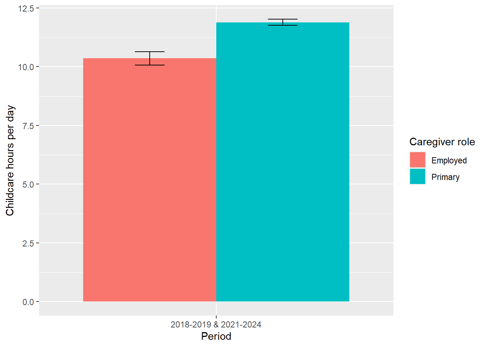
8 Regression Analysis
To further analyze the impact of various factors on unpaid childcare hours, I will conduct regression analyses using the survey design objects created earlier. This will allow me to control for multiple variables simultaneously and assess their individual contributions to childcare hours.
Variables to be used:
Total care hours (cc_total_hr)
Sex category (Female)
Race category
Employed Caregiver
Family Income: low income (less than $25,000), middle income ($25,000 to $59,000), high income (more than $60,000).
Proportion of Family Income Categories among under-5 Households
svymean(~factor(faminc_cat), design_under5, na.rm = TRUE)Hours of Childcare by Income (among primary caregivers)
hrs_primary_inc <- svyby(
~cc_total_hr,
~faminc_cat,
design_primary,
svymean,
na.rm = TRUE
) |>
as.data.frame() |>
mutate(
mean_hrs = cc_total_hr,
se_hrs = se
)
hrs_primary_inc faminc_cat cc_total_hr se mean_hrs
Low (<$40k) Low (<$40k) 11.78569 0.14881077 11.78569
Middle ($40k-$99,999) Middle ($40k-$99,999) 11.81241 0.11786847 11.81241
High (>=$100k) High (>=$100k) 12.03636 0.09603423 12.03636
se_hrs
Low (<$40k) 0.14881077
Middle ($40k-$99,999) 0.11786847
High (>=$100k) 0.09603423Income Distribution within Each Race (under-5 households)
race_income_comp <- svyby(
~factor(faminc_cat),
~race_cat,
design_under5,
svymean,
na.rm = TRUE
) |>
as.data.frame()
race_income_comp race_cat factor(faminc_cat)Low (<$40k)
White White 0.1550475
Black Black 0.3547354
Native American Native American 0.3563260
Asian/Pacific Islander Asian/Pacific Islander 0.1322462
Other/Multiracial Other/Multiracial 0.2025372
Hispanic Hispanic 0.4192612
factor(faminc_cat)Middle ($40k-$99,999)
White 0.3875549
Black 0.4184210
Native American 0.4364051
Asian/Pacific Islander 0.3040674
Other/Multiracial 0.4784830
Hispanic 0.4078780
factor(faminc_cat)High (>=$100k) se1 se2
White 0.4573976 0.007928076 0.00952060
Black 0.2268436 0.025191454 0.02804892
Native American 0.2072689 0.096279642 0.10176804
Asian/Pacific Islander 0.5636863 0.022466648 0.03189813
Other/Multiracial 0.3189798 0.054362106 0.07417615
Hispanic 0.1728608 0.018227904 0.01758188
se3
White 0.009398025
Black 0.024946679
Native American 0.075252990
Asian/Pacific Islander 0.031333068
Other/Multiracial 0.061449186
Hispanic 0.013909121names(race_income_comp)[1] "race_cat"
[2] "factor(faminc_cat)Low (<$40k)"
[3] "factor(faminc_cat)Middle ($40k-$99,999)"
[4] "factor(faminc_cat)High (>=$100k)"
[5] "se1"
[6] "se2"
[7] "se3" #Make a table
race_income_comp_tb <- race_income_comp |>
pivot_longer(
starts_with("factor("),
names_to = "faminc_raw",
values_to = "share"
) |>
mutate(
#Strip the "factor(faminc_cat)" prefix from the column names
faminc_cat = gsub("factor\\(faminc_cat\\)", "", faminc_raw),
faminc_cat = trimws(faminc_cat),
share_pct = share * 100
) |>
select(race_cat, faminc_cat, share_pct)
race_income_comp_tb# A tibble: 18 × 3
race_cat faminc_cat share_pct
<fct> <chr> <dbl>
1 White Low (<$40k) 15.5
2 White Middle ($40k-$99,999) 38.8
3 White High (>=$100k) 45.7
4 Black Low (<$40k) 35.5
5 Black Middle ($40k-$99,999) 41.8
6 Black High (>=$100k) 22.7
7 Native American Low (<$40k) 35.6
8 Native American Middle ($40k-$99,999) 43.6
9 Native American High (>=$100k) 20.7
10 Asian/Pacific Islander Low (<$40k) 13.2
11 Asian/Pacific Islander Middle ($40k-$99,999) 30.4
12 Asian/Pacific Islander High (>=$100k) 56.4
13 Other/Multiracial Low (<$40k) 20.3
14 Other/Multiracial Middle ($40k-$99,999) 47.8
15 Other/Multiracial High (>=$100k) 31.9
16 Hispanic Low (<$40k) 41.9
17 Hispanic Middle ($40k-$99,999) 40.8
18 Hispanic High (>=$100k) 17.3Childcare Hours by Race and Income (primary caregivers)
hrs_race_inc_primary <- svyby(
~cc_total_hr,
~race_cat + faminc_cat,
design_primary_employed,
svymean,
na.rm = TRUE
) |>
as.data.frame() |>
mutate(
mean_hrs = cc_total_hr,
se_hrs = se
)
hrs_race_inc_primary race_cat
White.Low (<$40k) White
Black.Low (<$40k) Black
Native American.Low (<$40k) Native American
Asian/Pacific Islander.Low (<$40k) Asian/Pacific Islander
Other/Multiracial.Low (<$40k) Other/Multiracial
Hispanic.Low (<$40k) Hispanic
White.Middle ($40k-$99,999) White
Black.Middle ($40k-$99,999) Black
Native American.Middle ($40k-$99,999) Native American
Asian/Pacific Islander.Middle ($40k-$99,999) Asian/Pacific Islander
Other/Multiracial.Middle ($40k-$99,999) Other/Multiracial
Hispanic.Middle ($40k-$99,999) Hispanic
White.High (>=$100k) White
Black.High (>=$100k) Black
Native American.High (>=$100k) Native American
Asian/Pacific Islander.High (>=$100k) Asian/Pacific Islander
Other/Multiracial.High (>=$100k) Other/Multiracial
Hispanic.High (>=$100k) Hispanic
faminc_cat cc_total_hr
White.Low (<$40k) Low (<$40k) 10.144838
Black.Low (<$40k) Low (<$40k) 8.927154
Native American.Low (<$40k) Low (<$40k) 15.083333
Asian/Pacific Islander.Low (<$40k) Low (<$40k) 8.440601
Other/Multiracial.Low (<$40k) Low (<$40k) 11.123302
Hispanic.Low (<$40k) Low (<$40k) 9.238098
White.Middle ($40k-$99,999) Middle ($40k-$99,999) 10.623311
Black.Middle ($40k-$99,999) Middle ($40k-$99,999) 8.636984
Native American.Middle ($40k-$99,999) Middle ($40k-$99,999) 10.579196
Asian/Pacific Islander.Middle ($40k-$99,999) Middle ($40k-$99,999) 11.206633
Other/Multiracial.Middle ($40k-$99,999) Middle ($40k-$99,999) 8.545460
Hispanic.Middle ($40k-$99,999) Middle ($40k-$99,999) 10.298590
White.High (>=$100k) High (>=$100k) 10.893407
Black.High (>=$100k) High (>=$100k) 10.273825
Native American.High (>=$100k) High (>=$100k) 12.208882
Asian/Pacific Islander.High (>=$100k) High (>=$100k) 10.821318
Other/Multiracial.High (>=$100k) High (>=$100k) 12.448472
Hispanic.High (>=$100k) High (>=$100k) 10.058811
se mean_hrs
White.Low (<$40k) 0.454303805980670161180 10.144838
Black.Low (<$40k) 0.573884085938991317377 8.927154
Native American.Low (<$40k) 0.000000000000004040968 15.083333
Asian/Pacific Islander.Low (<$40k) 1.129221546382558116761 8.440601
Other/Multiracial.Low (<$40k) 2.912552582278144619465 11.123302
Hispanic.Low (<$40k) 0.442872854044413954977 9.238098
White.Middle ($40k-$99,999) 0.290671093790621337671 10.623311
Black.Middle ($40k-$99,999) 0.549453627998521820786 8.636984
Native American.Middle ($40k-$99,999) 2.624861498648580315773 10.579196
Asian/Pacific Islander.Middle ($40k-$99,999) 0.782955187778438532753 11.206633
Other/Multiracial.Middle ($40k-$99,999) 1.036411115189711962259 8.545460
Hispanic.Middle ($40k-$99,999) 0.589018925871805931749 10.298590
White.High (>=$100k) 0.234069528755789485475 10.893407
Black.High (>=$100k) 0.736833417056509842880 10.273825
Native American.High (>=$100k) 1.142109347963792709280 12.208882
Asian/Pacific Islander.High (>=$100k) 0.562746450172056822403 10.821318
Other/Multiracial.High (>=$100k) 0.791020467397334559045 12.448472
Hispanic.High (>=$100k) 0.690107323720399956635 10.058811
se_hrs
White.Low (<$40k) 0.454303805980670161180
Black.Low (<$40k) 0.573884085938991317377
Native American.Low (<$40k) 0.000000000000004040968
Asian/Pacific Islander.Low (<$40k) 1.129221546382558116761
Other/Multiracial.Low (<$40k) 2.912552582278144619465
Hispanic.Low (<$40k) 0.442872854044413954977
White.Middle ($40k-$99,999) 0.290671093790621337671
Black.Middle ($40k-$99,999) 0.549453627998521820786
Native American.Middle ($40k-$99,999) 2.624861498648580315773
Asian/Pacific Islander.Middle ($40k-$99,999) 0.782955187778438532753
Other/Multiracial.Middle ($40k-$99,999) 1.036411115189711962259
Hispanic.Middle ($40k-$99,999) 0.589018925871805931749
White.High (>=$100k) 0.234069528755789485475
Black.High (>=$100k) 0.736833417056509842880
Native American.High (>=$100k) 1.142109347963792709280
Asian/Pacific Islander.High (>=$100k) 0.562746450172056822403
Other/Multiracial.High (>=$100k) 0.791020467397334559045
Hispanic.High (>=$100k) 0.690107323720399956635Share of Primary Caregivers by Race and Income
primary_race_inc <- svyby(
~primary_caregiver,
~race_cat + faminc_cat,
design_under5,
svymean,
na.rm = TRUE
) |>
as.data.frame() |>
mutate(
pct_primary = primary_caregiverTRUE * 100,
se_pct = se2 * 100
)
primary_race_inc race_cat
White.Low (<$40k) White
Black.Low (<$40k) Black
Native American.Low (<$40k) Native American
Asian/Pacific Islander.Low (<$40k) Asian/Pacific Islander
Other/Multiracial.Low (<$40k) Other/Multiracial
Hispanic.Low (<$40k) Hispanic
White.Middle ($40k-$99,999) White
Black.Middle ($40k-$99,999) Black
Native American.Middle ($40k-$99,999) Native American
Asian/Pacific Islander.Middle ($40k-$99,999) Asian/Pacific Islander
Other/Multiracial.Middle ($40k-$99,999) Other/Multiracial
Hispanic.Middle ($40k-$99,999) Hispanic
White.High (>=$100k) White
Black.High (>=$100k) Black
Native American.High (>=$100k) Native American
Asian/Pacific Islander.High (>=$100k) Asian/Pacific Islander
Other/Multiracial.High (>=$100k) Other/Multiracial
Hispanic.High (>=$100k) Hispanic
faminc_cat
White.Low (<$40k) Low (<$40k)
Black.Low (<$40k) Low (<$40k)
Native American.Low (<$40k) Low (<$40k)
Asian/Pacific Islander.Low (<$40k) Low (<$40k)
Other/Multiracial.Low (<$40k) Low (<$40k)
Hispanic.Low (<$40k) Low (<$40k)
White.Middle ($40k-$99,999) Middle ($40k-$99,999)
Black.Middle ($40k-$99,999) Middle ($40k-$99,999)
Native American.Middle ($40k-$99,999) Middle ($40k-$99,999)
Asian/Pacific Islander.Middle ($40k-$99,999) Middle ($40k-$99,999)
Other/Multiracial.Middle ($40k-$99,999) Middle ($40k-$99,999)
Hispanic.Middle ($40k-$99,999) Middle ($40k-$99,999)
White.High (>=$100k) High (>=$100k)
Black.High (>=$100k) High (>=$100k)
Native American.High (>=$100k) High (>=$100k)
Asian/Pacific Islander.High (>=$100k) High (>=$100k)
Other/Multiracial.High (>=$100k) High (>=$100k)
Hispanic.High (>=$100k) High (>=$100k)
primary_caregiverFALSE
White.Low (<$40k) 0.4062793
Black.Low (<$40k) 0.4863199
Native American.Low (<$40k) 0.6085750
Asian/Pacific Islander.Low (<$40k) 0.4969281
Other/Multiracial.Low (<$40k) 0.3195218
Hispanic.Low (<$40k) 0.4818166
White.Middle ($40k-$99,999) 0.4351984
Black.Middle ($40k-$99,999) 0.5933897
Native American.Middle ($40k-$99,999) 0.6311315
Asian/Pacific Islander.Middle ($40k-$99,999) 0.4666021
Other/Multiracial.Middle ($40k-$99,999) 0.6222330
Hispanic.Middle ($40k-$99,999) 0.4783415
White.High (>=$100k) 0.4897240
Black.High (>=$100k) 0.6127628
Native American.High (>=$100k) 0.6006478
Asian/Pacific Islander.High (>=$100k) 0.4493217
Other/Multiracial.High (>=$100k) 0.4996420
Hispanic.High (>=$100k) 0.5252294
primary_caregiverTRUE se1
White.Low (<$40k) 0.5937207 0.02991651
Black.Low (<$40k) 0.5136801 0.04409481
Native American.Low (<$40k) 0.3914250 0.16046915
Asian/Pacific Islander.Low (<$40k) 0.5030719 0.08323348
Other/Multiracial.Low (<$40k) 0.6804782 0.12536845
Hispanic.Low (<$40k) 0.5181834 0.02959818
White.Middle ($40k-$99,999) 0.5648016 0.01610869
Black.Middle ($40k-$99,999) 0.4066103 0.04334068
Native American.Middle ($40k-$99,999) 0.3688685 0.13543985
Asian/Pacific Islander.Middle ($40k-$99,999) 0.5333979 0.06579155
Other/Multiracial.Middle ($40k-$99,999) 0.3777670 0.10285864
Hispanic.Middle ($40k-$99,999) 0.5216585 0.03507343
White.High (>=$100k) 0.5102760 0.01531685
Black.High (>=$100k) 0.3872372 0.05820885
Native American.High (>=$100k) 0.3993522 0.19924354
Asian/Pacific Islander.High (>=$100k) 0.5506783 0.03338315
Other/Multiracial.High (>=$100k) 0.5003580 0.12293338
Hispanic.High (>=$100k) 0.4747706 0.05019124
se2 pct_primary se_pct
White.Low (<$40k) 0.02991651 59.37207 2.991651
Black.Low (<$40k) 0.04409481 51.36801 4.409481
Native American.Low (<$40k) 0.16046915 39.14250 16.046915
Asian/Pacific Islander.Low (<$40k) 0.08323348 50.30719 8.323348
Other/Multiracial.Low (<$40k) 0.12536845 68.04782 12.536845
Hispanic.Low (<$40k) 0.02959818 51.81834 2.959818
White.Middle ($40k-$99,999) 0.01610869 56.48016 1.610869
Black.Middle ($40k-$99,999) 0.04334068 40.66103 4.334068
Native American.Middle ($40k-$99,999) 0.13543985 36.88685 13.543985
Asian/Pacific Islander.Middle ($40k-$99,999) 0.06579155 53.33979 6.579155
Other/Multiracial.Middle ($40k-$99,999) 0.10285864 37.77670 10.285864
Hispanic.Middle ($40k-$99,999) 0.03507343 52.16585 3.507343
White.High (>=$100k) 0.01531685 51.02760 1.531685
Black.High (>=$100k) 0.05820885 38.72372 5.820885
Native American.High (>=$100k) 0.19924354 39.93522 19.924354
Asian/Pacific Islander.High (>=$100k) 0.03338315 55.06783 3.338315
Other/Multiracial.High (>=$100k) 0.12293338 50.03580 12.293338
Hispanic.High (>=$100k) 0.05019124 47.47706 5.019124primary_race_inc_tb <- primary_race_inc |>
select(race_cat, faminc_cat, pct_primary) |>
tidyr::pivot_wider(
names_from = faminc_cat,
values_from = pct_primary
)
primary_race_inc_tb # A tibble: 6 × 4
race_cat `Low (<$40k)` `Middle ($40k-$99,999)` `High (>=$100k)`
<fct> <dbl> <dbl> <dbl>
1 White 59.4 56.5 51.0
2 Black 51.4 40.7 38.7
3 Native American 39.1 36.9 39.9
4 Asian/Pacific Islander 50.3 53.3 55.1
5 Other/Multiracial 68.0 37.8 50.0
6 Hispanic 51.8 52.2 47.5# Restrict to primary caregivers in under-5 households
design_primary_under5 <- subset(design_under5, primary_caregiver == TRUE)
design_primary_under5Call: subset(design_under5, primary_caregiver == TRUE)
Successive difference with 160 replicates and MSE variances.# Race distribution among primary caregivers, by income
race_comp_primary_inc <- svyby(
~ factor(race_cat),
~ faminc_cat,
design_primary_under5,
svymean,
na.rm = TRUE
) |>
as.data.frame()
race_comp_primary_inc faminc_cat factor(race_cat)White
Low (<$40k) Low (<$40k) 0.3741932
Middle ($40k-$99,999) Middle ($40k-$99,999) 0.5721293
High (>=$100k) High (>=$100k) 0.6922046
factor(race_cat)Black factor(race_cat)Native American
Low (<$40k) 0.14730075 0.006703915
Middle ($40k-$99,999) 0.08843325 0.004975192
High (>=$100k) 0.05180812 0.002902746
factor(race_cat)Asian/Pacific Islander
Low (<$40k) 0.03737338
Middle ($40k-$99,999) 0.05858497
High (>=$100k) 0.12722456
factor(race_cat)Other/Multiracial
Low (<$40k) 0.010760746
Middle ($40k-$99,999) 0.009074653
High (>=$100k) 0.009091887
factor(race_cat)Hispanic se1 se2
Low (<$40k) 0.4236680 0.02057000 0.014667097
Middle ($40k-$99,999) 0.2668027 0.01905016 0.010685284
High (>=$100k) 0.1167681 0.01602638 0.008639732
se3 se4 se5 se6
Low (<$40k) 0.003618361 0.007383739 0.003992857 0.02384493
Middle ($40k-$99,999) 0.002329583 0.006565523 0.002893239 0.01958964
High (>=$100k) 0.001785766 0.010794032 0.002942148 0.01418324race_comp_primary_inc_tidy <- race_comp_primary_inc |>
tidyr::pivot_longer(
starts_with("factor("),
names_to = "race_raw",
values_to = "share"
) |>
dplyr::mutate(
race_cat = gsub("factor\\(race_cat\\)", "", race_raw),
race_cat = trimws(race_cat),
share_pct = share * 100
) |>
dplyr::select(faminc_cat, race_cat, share_pct)
race_comp_primary_inc_tidy# A tibble: 18 × 3
faminc_cat race_cat share_pct
<fct> <chr> <dbl>
1 Low (<$40k) White 37.4
2 Low (<$40k) Black 14.7
3 Low (<$40k) Native American 0.670
4 Low (<$40k) Asian/Pacific Islander 3.74
5 Low (<$40k) Other/Multiracial 1.08
6 Low (<$40k) Hispanic 42.4
7 Middle ($40k-$99,999) White 57.2
8 Middle ($40k-$99,999) Black 8.84
9 Middle ($40k-$99,999) Native American 0.498
10 Middle ($40k-$99,999) Asian/Pacific Islander 5.86
11 Middle ($40k-$99,999) Other/Multiracial 0.907
12 Middle ($40k-$99,999) Hispanic 26.7
13 High (>=$100k) White 69.2
14 High (>=$100k) Black 5.18
15 High (>=$100k) Native American 0.290
16 High (>=$100k) Asian/Pacific Islander 12.7
17 High (>=$100k) Other/Multiracial 0.909
18 High (>=$100k) Hispanic 11.7 income_comp_primary_race <- svyby(
~ factor(faminc_cat),
~ race_cat,
design_primary_under5,
svymean,
na.rm = TRUE
)
income_comp_primary_race race_cat factor(faminc_cat)Low (<$40k)
White White 0.1691112
Black Black 0.4139521
Native American Native American 0.3639511
Asian/Pacific Islander Asian/Pacific Islander 0.1234018
Other/Multiracial Other/Multiracial 0.2882215
Hispanic Hispanic 0.4242447
factor(faminc_cat)Middle ($40k-$99,999)
White 0.4021189
Black 0.3864957
Native American 0.4200572
Asian/Pacific Islander 0.3008356
Other/Multiracial 0.3780053
Hispanic 0.4154941
factor(faminc_cat)High (>=$100k) se1 se2
White 0.4287699 0.01033274 0.01279465
Black 0.1995522 0.03482945 0.03572609
Native American 0.2159917 0.15066814 0.15561524
Asian/Pacific Islander 0.5757626 0.02394452 0.03085301
Other/Multiracial 0.3337732 0.08765822 0.09117591
Hispanic 0.1602612 0.02727005 0.02751529
se3
White 0.01279672
Black 0.02903747
Native American 0.11922592
Asian/Pacific Islander 0.03307575
Other/Multiracial 0.09475364
Hispanic 0.01888127# Example regression model: childcare hours
atus_reg_hours <- svyglm(
cc_total_hr ~ female + race_cat + employed_caregiver + faminc_cat,
design = design_primary,
na.action = na.omit
)
summary(atus_reg_hours)
Call:
svyglm(formula = cc_total_hr ~ female + race_cat + employed_caregiver +
faminc_cat, design = design_primary, na.action = na.omit)
Survey design:
subset(design_main, primary_caregiver)
Coefficients:
Estimate Std. Error t value
(Intercept) 12.00231 0.17771 67.539
femaleTRUE 0.64803 0.12187 5.317
race_catBlack -0.84205 0.22711 -3.708
race_catNative American 0.16360 0.57800 0.283
race_catAsian/Pacific Islander 0.14715 0.18609 0.791
race_catOther/Multiracial 0.23272 0.54459 0.427
race_catHispanic -0.19292 0.14379 -1.342
employed_caregiverTRUE -2.06308 0.15140 -13.627
faminc_catMiddle ($40k-$99,999) 0.07925 0.17369 0.456
faminc_catHigh (>=$100k) 0.30271 0.17556 1.724
Pr(>|t|)
(Intercept) < 0.0000000000000002 ***
femaleTRUE 0.000000375 ***
race_catBlack 0.000294 ***
race_catNative American 0.777535
race_catAsian/Pacific Islander 0.430325
race_catOther/Multiracial 0.669748
race_catHispanic 0.181727
employed_caregiverTRUE < 0.0000000000000002 ***
faminc_catMiddle ($40k-$99,999) 0.648873
faminc_catHigh (>=$100k) 0.086715 .
---
Signif. codes: 0 '***' 0.001 '**' 0.01 '*' 0.05 '.' 0.1 ' ' 1
(Dispersion parameter for gaussian family taken to be 7.033221)
Number of Fisher Scoring iterations: 2atus_reg_primary <- svyglm(
primary_caregiver ~ female + race_cat + work_today + faminc_cat,
design = design_primary,
family = quasibinomial(),
na.action = na.omit
)
summary(atus_reg_primary)
Call:
svyglm(formula = primary_caregiver ~ female + race_cat + work_today +
faminc_cat, design = design_primary, family = quasibinomial(),
na.action = na.omit)
Survey design:
subset(design_main, primary_caregiver)
Coefficients:
Estimate Std. Error t value
(Intercept) 26.559100516 1.999990505 13.28
femaleTRUE 0.032424459 0.000003299 9827.92
race_catBlack 0.155067638 0.000007889 19655.82
race_catNative American 0.021848593 0.000004455 4904.34
race_catAsian/Pacific Islander 0.040480271 0.000010897 3714.85
race_catOther/Multiracial 0.042713619 0.000003446 12395.55
race_catHispanic 0.214638155 0.000002012 106664.10
work_todayTRUE 0.090755312 0.000007899 11488.99
faminc_catMiddle ($40k-$99,999) -0.003938153 0.000017259 -228.17
faminc_catHigh (>=$100k) -0.049787207 0.000020405 -2440.00
Pr(>|t|)
(Intercept) <0.0000000000000002 ***
femaleTRUE <0.0000000000000002 ***
race_catBlack <0.0000000000000002 ***
race_catNative American <0.0000000000000002 ***
race_catAsian/Pacific Islander <0.0000000000000002 ***
race_catOther/Multiracial <0.0000000000000002 ***
race_catHispanic <0.0000000000000002 ***
work_todayTRUE <0.0000000000000002 ***
faminc_catMiddle ($40k-$99,999) <0.0000000000000002 ***
faminc_catHigh (>=$100k) <0.0000000000000002 ***
---
Signif. codes: 0 '***' 0.001 '**' 0.01 '*' 0.05 '.' 0.1 ' ' 1
(Dispersion parameter for quasibinomial family taken to be 0.000000000002659478)
Number of Fisher Scoring iterations: 25atus_reg_income <- svyglm(
faminc_cat ~ female + race_cat + work_today,
design = design_primary,
family = quasibinomial(),
na.action = na.omit
)
summary(atus_reg_income)
Call:
svyglm(formula = faminc_cat ~ female + race_cat + work_today,
design = design_primary, family = quasibinomial(), na.action = na.omit)
Survey design:
subset(design_main, primary_caregiver)
Coefficients:
Estimate Std. Error t value Pr(>|t|)
(Intercept) 1.5994 0.1228 13.025 < 0.0000000000000002
femaleTRUE -0.1404 0.1313 -1.070 0.2864
race_catBlack -1.2326 0.1529 -8.062 0.000000000000207
race_catNative American -1.0457 0.6833 -1.530 0.1280
race_catAsian/Pacific Islander 0.3885 0.2303 1.687 0.0936
race_catOther/Multiracial -0.6630 0.4406 -1.505 0.1345
race_catHispanic -1.2711 0.1295 -9.819 < 0.0000000000000002
work_todayTRUE 0.3050 0.1354 2.253 0.0257
(Intercept) ***
femaleTRUE
race_catBlack ***
race_catNative American
race_catAsian/Pacific Islander .
race_catOther/Multiracial
race_catHispanic ***
work_todayTRUE *
---
Signif. codes: 0 '***' 0.001 '**' 0.01 '*' 0.05 '.' 0.1 ' ' 1
(Dispersion parameter for quasibinomial family taken to be 1.002688)
Number of Fisher Scoring iterations: 4# 1. Check faminc_cat in the raw atus:
table(atus$faminc_cat, useNA = "ifany")
Low (<$40k) Middle ($40k-$99,999) High (>=$100k)
18250 23786 19214
Missing/Refused
0 # 2. Check faminc_cat in under-5 design:
svymean(~factor(faminc_cat), design_under5, na.rm = TRUE) mean SE
factor(faminc_cat)Low (<$40k) 0.24521 0.0080
factor(faminc_cat)Middle ($40k-$99,999) 0.39117 0.0082
factor(faminc_cat)High (>=$100k) 0.36362 0.0068# 3. Count NAs inside design_under5:
sapply(
design_under5$variables[c("cc_total_hr", "female", "race_cat", "faminc_cat", "work_today")],
function(x) sum(is.na(x))
)cc_total_hr female race_cat faminc_cat work_today
0 0 0 0 0 # 4. Refit regression:
atus_reg_hours <- svyglm(
cc_total_hr ~ female + race_cat + faminc_cat + work_today,
design = design_under5,
na.action = na.omit
)
atus_reg_hours_primary <- svyglm(
cc_total_hr ~ female + race_cat + work_today + faminc_cat,
design = design_primary,
na.action = na.omit
)
summary(atus_reg_hours_primary)
Call:
svyglm(formula = cc_total_hr ~ female + race_cat + work_today +
faminc_cat, design = design_primary, na.action = na.omit)
Survey design:
subset(design_main, primary_caregiver)
Coefficients:
Estimate Std. Error t value
(Intercept) 12.00231 0.17771 67.539
femaleTRUE 0.64803 0.12187 5.317
race_catBlack -0.84205 0.22711 -3.708
race_catNative American 0.16360 0.57800 0.283
race_catAsian/Pacific Islander 0.14715 0.18609 0.791
race_catOther/Multiracial 0.23272 0.54459 0.427
race_catHispanic -0.19292 0.14379 -1.342
work_todayTRUE -2.06308 0.15140 -13.627
faminc_catMiddle ($40k-$99,999) 0.07925 0.17369 0.456
faminc_catHigh (>=$100k) 0.30271 0.17556 1.724
Pr(>|t|)
(Intercept) < 0.0000000000000002 ***
femaleTRUE 0.000000375 ***
race_catBlack 0.000294 ***
race_catNative American 0.777535
race_catAsian/Pacific Islander 0.430325
race_catOther/Multiracial 0.669748
race_catHispanic 0.181727
work_todayTRUE < 0.0000000000000002 ***
faminc_catMiddle ($40k-$99,999) 0.648873
faminc_catHigh (>=$100k) 0.086715 .
---
Signif. codes: 0 '***' 0.001 '**' 0.01 '*' 0.05 '.' 0.1 ' ' 1
(Dispersion parameter for gaussian family taken to be 7.033221)
Number of Fisher Scoring iterations: 2nobs(atus_reg_hours)[1] 6072summary(atus_reg_hours)
Call:
svyglm(formula = cc_total_hr ~ female + race_cat + faminc_cat +
work_today, design = design_under5, na.action = na.omit)
Survey design:
subset(design_main, under5_hh)
Coefficients:
Estimate Std. Error t value
(Intercept) 9.07471 0.28571 31.762
femaleTRUE 1.71253 0.16465 10.401
race_catBlack -2.03331 0.31959 -6.362
race_catNative American -2.05437 0.98027 -2.096
race_catAsian/Pacific Islander -0.05131 0.31421 -0.163
race_catOther/Multiracial -0.98509 0.84834 -1.161
race_catHispanic -1.19734 0.24604 -4.866
faminc_catMiddle ($40k-$99,999) 0.13513 0.26890 0.503
faminc_catHigh (>=$100k) 0.29854 0.25499 1.171
work_todayTRUE -4.47950 0.17802 -25.163
Pr(>|t|)
(Intercept) < 0.0000000000000002 ***
femaleTRUE < 0.0000000000000002 ***
race_catBlack 0.00000000228 ***
race_catNative American 0.0378 *
race_catAsian/Pacific Islander 0.8705
race_catOther/Multiracial 0.2474
race_catHispanic 0.00000284855 ***
faminc_catMiddle ($40k-$99,999) 0.6160
faminc_catHigh (>=$100k) 0.2435
work_todayTRUE < 0.0000000000000002 ***
---
Signif. codes: 0 '***' 0.001 '**' 0.01 '*' 0.05 '.' 0.1 ' ' 1
(Dispersion parameter for gaussian family taken to be 21.26649)
Number of Fisher Scoring iterations: 2atus_reg_hours_nowork <- svyglm(
cc_total_hr ~ female + race_cat + faminc_cat,
design = design_under5,
na.action = na.omit
)
summary(atus_reg_hours_nowork)
Call:
svyglm(formula = cc_total_hr ~ female + race_cat + faminc_cat,
design = design_under5, na.action = na.omit)
Survey design:
subset(design_main, under5_hh)
Coefficients:
Estimate Std. Error t value
(Intercept) 6.5409 0.2638 24.793
femaleTRUE 2.6789 0.1653 16.207
race_catBlack -1.8833 0.3191 -5.902
race_catNative American -2.1052 0.8954 -2.351
race_catAsian/Pacific Islander -0.0111 0.3869 -0.029
race_catOther/Multiracial -0.7815 0.9078 -0.861
race_catHispanic -0.9096 0.2586 -3.517
faminc_catMiddle ($40k-$99,999) -0.1894 0.2759 -0.686
faminc_catHigh (>=$100k) -0.2047 0.2665 -0.768
Pr(>|t|)
(Intercept) < 0.0000000000000002 ***
femaleTRUE < 0.0000000000000002 ***
race_catBlack 0.0000000228 ***
race_catNative American 0.020005 *
race_catAsian/Pacific Islander 0.977143
race_catOther/Multiracial 0.390648
race_catHispanic 0.000577 ***
faminc_catMiddle ($40k-$99,999) 0.493575
faminc_catHigh (>=$100k) 0.443653
---
Signif. codes: 0 '***' 0.001 '**' 0.01 '*' 0.05 '.' 0.1 ' ' 1
(Dispersion parameter for gaussian family taken to be 25.96863)
Number of Fisher Scoring iterations: 29 Visualizations
Share of Adults Primary Caregivers, by Sex
atus_prim_sex <- svyby(
~primary_caregiver,
~sex_category,
subset(design_main, under5_hh),
svymean,
na.rm = TRUE
) |> as.data.frame()
atus_prim_sex <- atus_prim_sex |>
rename(
mean = primary_caregiverTRUE,
se = se2
)|>
mutate(
pct = mean * 100,
se_pct = se * 100
)
ggplot(atus_prim_sex,
aes(x = sex_category, y = pct))+
geom_col(fill = "lightblue") +
geom_errorbar(aes(ymin = pct - 1.96*se_pct,
ymax = pct + 1.96*se_pct),
width = 0.2) +
labs(x = "Sex",
y = "Percentage of Primary Caregivers",
title = "Share of Adults Who Are Primary Caregivers
(2018-2019 & 2021-2024)") +
theme_minimal() +
theme(
plot.title = element_text(hjust = 0.5),
panel.border = element_rect(color = "black", fill = NA, linewidth =1)
)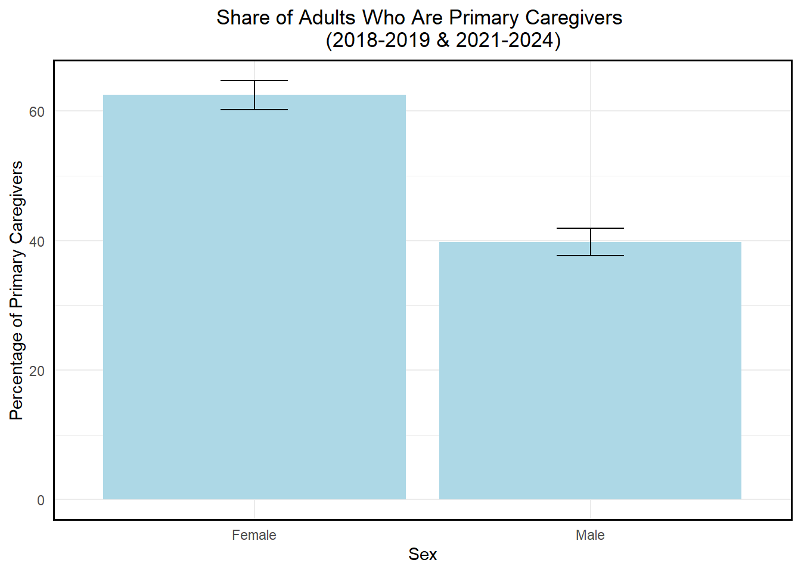
Race Composition of under-5 Households vs Primary Caregivers
comp_long <- comp_race |>
filter(period == "2018-2019 & 2021-2024",
group %in% c("Under-5 Households", "Primary Caregivers")) |>
select(group, pct_white_nh, pct_black_nh, pct_asian_nh,
pct_native_nh, pct_other_nh, pct_hispanic) |>
pivot_longer(
cols = starts_with("pct_"),
names_to = "race",
values_to = "pct"
)
ggplot(comp_long, aes(x = race, y = pct, fill = group))+
geom_col(position = "dodge")+
labs(
x = "Race/Ethnicity",
y = "Percent",
fill = "Group",
title = "Race/Ethnicity Composition: \n Under-5 Households vs Primary Caregivers (2021-2024)"
)+
theme_minimal() +
theme(axis.text.x = element_text(angle = 45, hjust = 1),
plot.title = element_text(hjust = 0.5),
panel.border = element_rect(color = "black", fill = NA, linewidth =1))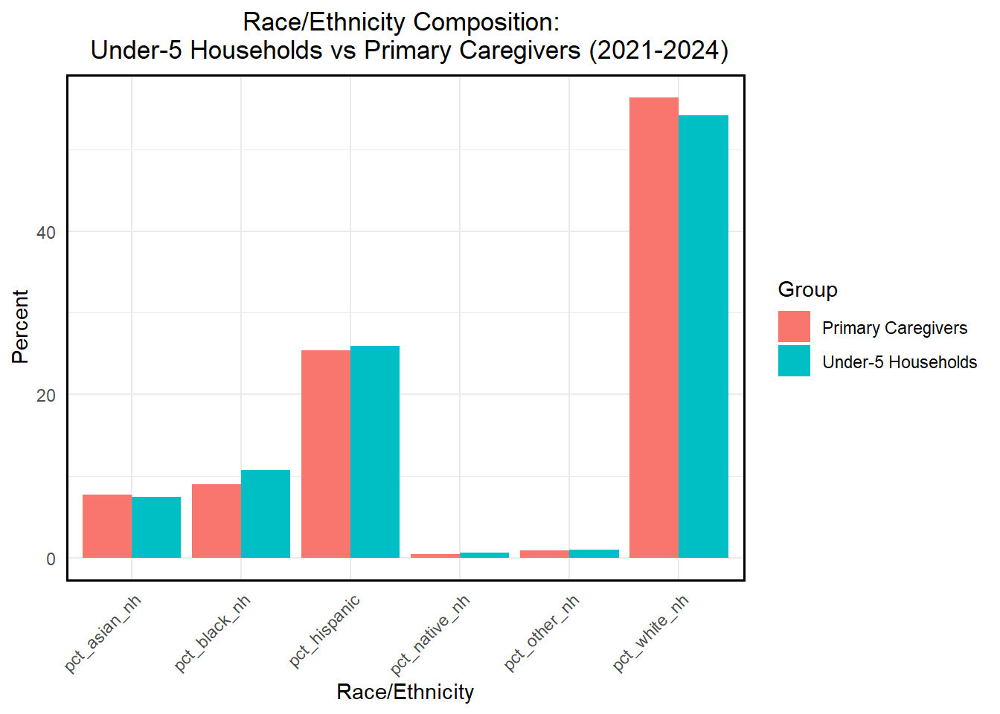
Within each race, who is more likely to live with children under five?
# Within each race: % in under-5 household
under5_by_race_est <- svyby(
~I(under5_hh),
~race_cat,
design_all,
svymean,
na.rm.by = TRUE
) |> as.data.frame()
under5_by_race <- under5_by_race_est |>
dplyr::transmute(
race_cat = as.character(race_cat),
pct_under5 = `I(under5_hh)TRUE` * 100,
se_under5 = se2 * 100
)
#Prepare the dataframe for plotting
plot_df <- under5_by_race %>%
rename(
race = race_cat,
pct_under5 = pct_under5
)
#Plot
ggplot(plot_df, aes(x = pct_under5, y = race)) +
geom_col(fill = "#2C3E50", width = 0.7, col = "gray40") +
geom_text(
aes(label = paste0(round(pct_under5, 1), "%")),
hjust = 1.2,
fontface = "bold",
color = "white",
size = 3.3
) +
labs(
x = "Share Living in Under-Five Household",
y = "Race/Ethnicity",
) +
theme_minimal(base_size = 13) +
theme(
plot.title = element_text(face = "bold"),
axis.title = element_text(face = "bold"),
) +
coord_cartesian(xlim = c(0, max(plot_df$pct_under5) + 10))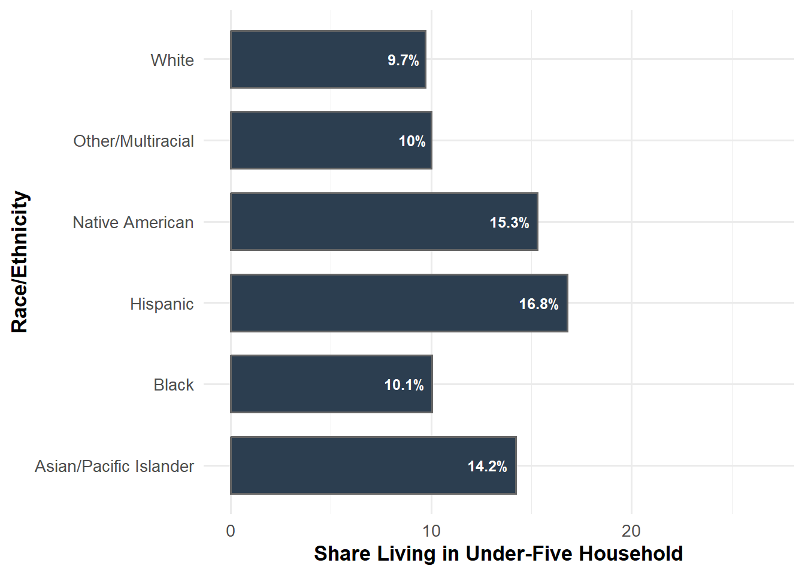
Share of who becomes Primary Caregivers by Race/Ethnicity
plot_df <- primary_by_race %>%
rename(
race = race_cat,
pct_primary = pct_primary_given_under5
)
ggplot(plot_df, aes(x = pct_primary, y = race)) +
geom_col(fill = "#1ABC9C", width = 0.7, col = "gray40") +
geom_text(
aes(label = paste0(round(pct_primary, 1), "%")),
hjust = 1.2,
fontface = "bold",
color = "white",
size = 4
) +
labs(
x = "Share Primary Caregiver",
y = "Race/Ethnicity",
) +
theme_minimal(base_size = 13) +
theme(
plot.title = element_text(face = "bold"),
axis.title = element_text(face = "bold"),
plot.caption = element_text(size = 9, color = "gray40")
) +
coord_cartesian(xlim = c(0, max(plot_df$pct_primary) + 10))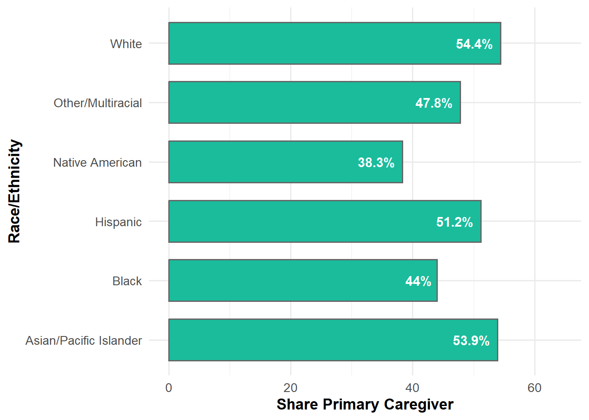
Distribution of Primary Caregivers by Gender and Race/Ethnicity
#female_race_primary
#Convert to clean dataframe
prop_df <- female_race_primary |>
as.data.frame() |>
rename(
pct_female = sex_categoryFemale,
pct_male = sex_categoryMale,
race = race_cat
) |>
mutate(
pct_female = pct_female * 100,
pct_male = pct_male * 100
) |>
pivot_longer(
cols = c(pct_female, pct_male),
names_to = "gender",
values_to = "percent"
) |>
mutate(
gender = ifelse(gender == "pct_female", "Female", "Male")
)
#Plot the proportions
ggplot(prop_df, aes(x = race, y = percent, fill = gender)) +
geom_col(position = "dodge", width = 0.7, col = "gray40") +
geom_text(
aes(label = paste0(round(percent, 1), "%")),
position = position_dodge(width = 0.7),
hjust = 1.2,
fontface = "bold",
color = "white",
size = 2.8
) +
coord_flip() +
scale_fill_manual(values = c("Female" = "#2C3E50", "Male" = "#1ABC9C")) +
labs(
title = " ",
x = "Race/Ethnicity",
y = "Share of Primary Caregivers",
) +
theme_minimal(base_size = 13) +
theme(
plot.title = element_text(face = "bold"),
axis.title = element_text(face = "bold"),
legend.title = element_blank()
)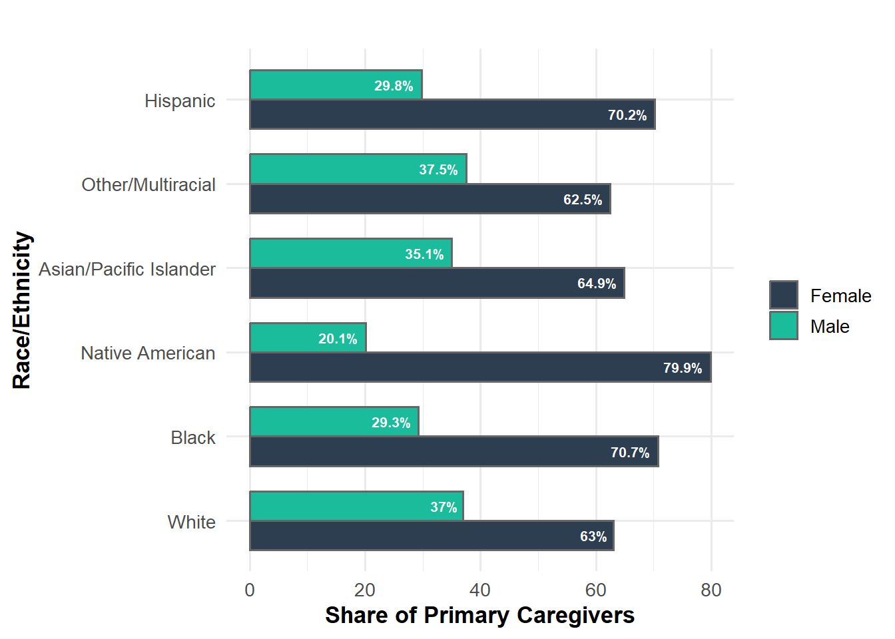
Distribution of Childcare by Hours (raw hours)
atus_under5 <- subset(design_main, under5_hh)
atus_dat <- atus_under5$variables
ggplot(atus_dat, aes(x = sex_category, y = cc_total_hr)) +
geom_boxplot(fill = "lightgreen") +
coord_cartesian(ylim = c(0, 20)) + #limit y-axis to focus on main distribution)
labs(
x = "Sex",
y = "Childcare hours (per day",
title = "Distribution of Childcare Hours by Sex \n (under-5 Households, 2021-2024)")+
theme_minimal() +
theme(
plot.title = element_text(hjust = 0.5),
panel.border = element_rect(color = "black", fill = NA, linewidth =1)
)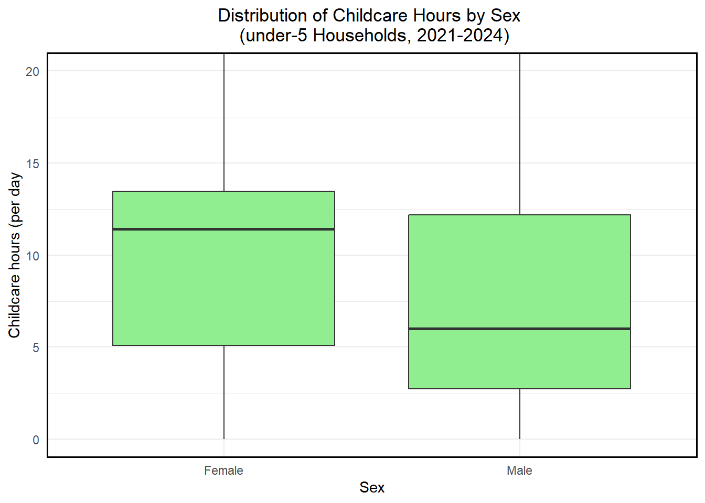
Distribution of Childcare Hours by Sex (weighted)
#Convert to clean dataframe
avg_hr_df <- avg_hr_under5 |>
as.data.frame() |>
rename(
childcare_hrs = cc_total_hr,
gender = sex_category
)
#Weighted average childcare hours by gender
ggplot(avg_hr_df, aes(x = gender, y = childcare_hrs, fill = gender)) +
geom_col(width = 0.6, col = "gray40") +
geom_text(
aes(label = round (childcare_hrs, 1)),
vjust = 1.5,
color = "white",
fontface = "bold",
size = 4
) +
scale_fill_manual(values = c("#2C3E50", "#1ABC9C")) +
labs(
title = " ",
x = "Gender",
y = "Childcare Hours (per day)"
) +
theme_minimal(base_size = 13) +
theme(
legend.position = "none",
plot.title = element_text(face = "bold"),
axis.title = element_text(face = "bold")
)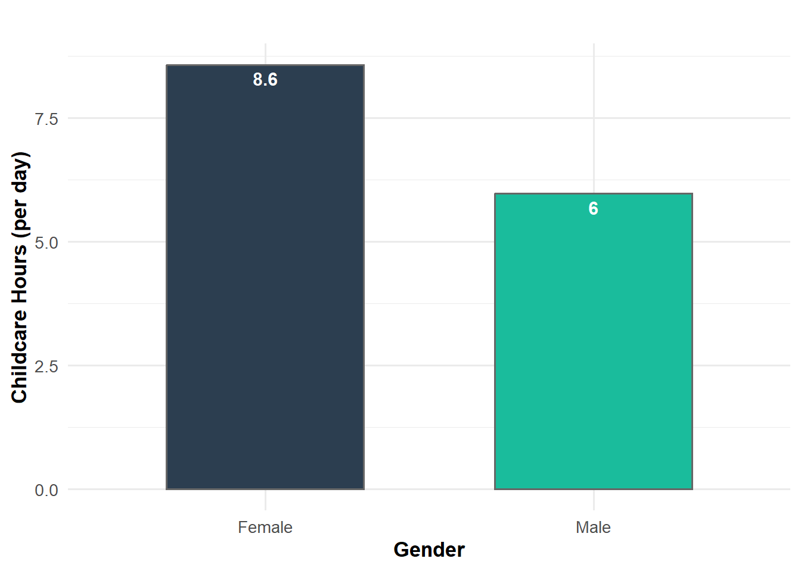
Distribution of Primary Caregivers by Sex, Worked Today, and Employed
sex_comp_roles <- bind_rows(
get_sex_comp(design_under5, "Under-5 Households"),
get_sex_comp(design_primary, "Primary Caregivers"),
get_sex_comp(design_primary_employed, "Employed Caregivers")
)|>
mutate(
sex = trimws(sex),
role = factor(role,
levels = c("Under-5 Households",
"Primary Caregivers",
"Employed Caregivers")),
share_pct = share * 100,
se_pct = se * 100
)
#Female by role
female_roles <- comp_race |>
filter(group %in% c("Under-5 Households", "Primary Caregivers", "Employed Caregivers")) |>
select(group, pct_female)
#Proportion of primary caregivers who worked today by sex
worked_primary_sex <- svyby(
~work_today,
~sex_category,
design_primary,
svymean,
na.rm = TRUE
)|>
as.data.frame() |>
rename(sex = sex_category,
share = work_todayTRUE,
se = se2) |>
mutate(
share_pct = share * 100,
se_pct = se * 100
)
sex_comp_roles role sex share se share_pct se_pct
1 Under-5 Households Female 0.5502095 0.007195851 55.02095 0.7195851
2 Under-5 Households Male 0.4497905 0.007195851 44.97905 0.7195851
3 Primary Caregivers Female 0.6576306 0.008697234 65.76306 0.8697234
4 Primary Caregivers Male 0.3423694 0.008697234 34.23694 0.8697234
5 Employed Caregivers Female 0.5806272 0.020340077 58.06272 2.0340077
6 Employed Caregivers Male 0.4193728 0.020340077 41.93728 2.0340077worked_primary_sex sex work_todayFALSE share se1 se share_pct
Female Female 0.7557670 0.2442330 0.01194732 0.01194732 24.42330
Male Male 0.6611604 0.3388396 0.01727112 0.01727112 33.88396
se_pct
Female 1.194732
Male 1.727112Plot of Female vs Male Roles
ggplot(sex_comp_roles,
aes(x = role, y = share_pct, fill = sex)) +
geom_col(position = position_dodge(width = 0.7), width = 0.6) +
geom_errorbar(aes(ymin = share_pct - 1.96*se_pct,
ymax = share_pct + 1.96*se_pct),
position = position_dodge(width = 0.7),
width = 0.2,
alpha = 0.4) +
scale_fill_manual(values = c("Female" = "#6C4B9E", "Male" = "grey40")) +
#Labels - % of female vs male
geom_text(aes(label = sprintf("%.1f%%", share_pct)),
position = position_dodge(width = 0.7),
vjust = 3.0,
color = "white",
size = 3.2) +
labs(
x = NULL,
y = "Share of Adults (%)",
fill = "Sex",
title = "Who does unpaid care in under-5 households?"
)+
#bold axis labels
theme_minimal(base_size = 12) +
theme(
legend.position = "right",
axis.text.x = element_text(angle = 0, hjust = 0.5),
plot.title = element_text(hjust = 0.5),
panel.border = element_rect(color = "black", fill = NA, linewidth =1)
)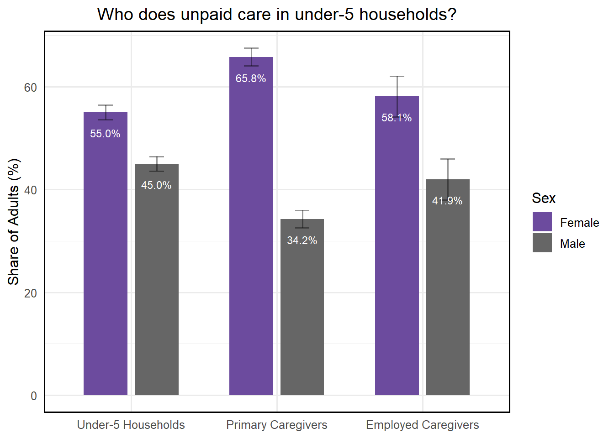
Plot of Who worked today among primary caregivers
ggplot(worked_primary_sex,
aes(x = sex, y = share_pct, fill = sex))+
geom_col(width = 0.6) +
geom_errorbar(aes(ymin = share_pct - 1.96*se_pct,
ymax = share_pct + 1.96*se_pct),
width = 0.2,
alpha = 0.4) +
scale_fill_manual(values = c("Female" = "#6C4B9E", "Male" = "grey40")) +
#Labels - % of female vs male
geom_text(aes(label = sprintf("%.1f%%", share_pct)),
position = position_dodge(width = 0.7),
vjust = 4.8,
color = "white",
size = 3.2) +
labs(
x = NULL,
y = "% who worked for pay on diary day",
fill = "Sex",
title = "Among primary caregivers, who is also in paid work?"
)+
theme_minimal(base_size = 12) +
theme(
legend.position = "none",
plot.title = element_text(hjust = 0.5),
axis.text.x = element_text(angle = 0, hjust = 0.5),
panel.border = element_rect(color = "black", fill = NA, linewidth =1)
)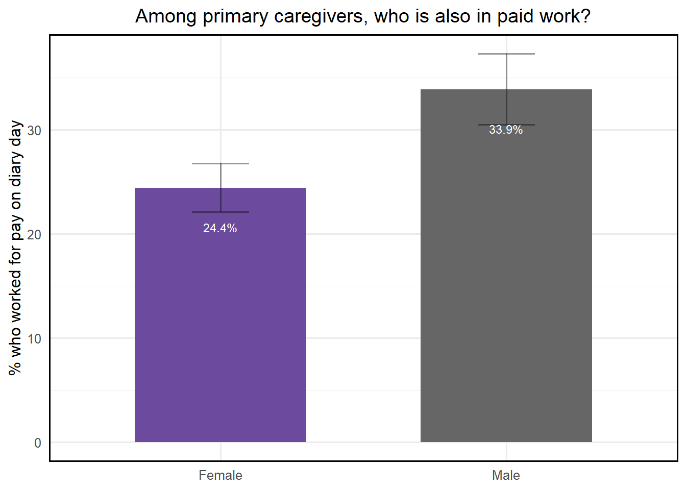
Income by Race/Ethnicity for Primary Caregiver
race_palette <- c(
"White" = "#2C3E50", # deep slate
"Black" = "#4C4C4C", # dark gray
"Hispanic" = "#7A3E9D", # purple highlight
"Asian/Pacific Islander" = "#8E44AD", # lighter purple
"Native American" = "#16A085", # teal
"Other/Multiracial" = "#95A5A6" # light gray
)
race_plot_df <- race_comp_primary_inc_tidy %>%
mutate(
faminc_cat = factor(
faminc_cat,
levels = c("Low (<$40k)", "Middle ($40k-$99,999)", "High (>=$100k)")
),
race_cat = factor(
race_cat,
levels = c(
"White", "Black", "Hispanic",
"Asian/Pacific Islander", "Native American",
"Other/Multiracial"
)
),
share = share_pct / 100
)
#Plot
gg_race_income <- ggplot(race_plot_df, aes(y = faminc_cat, x = share, fill = race_cat)) +
geom_col(width = 0.70, position = "stack", col = "grey40") +
scale_x_continuous(labels = percent_format(accuracy = 1)) +
scale_fill_manual(values = race_palette) +
labs(
x = "Share of Primary Caregivers",
y = "Family Income Category",
fill = "Race/Ethnicity"
) +
theme_minimal(base_size = 12) +
theme(
panel.grid.major.y = element_blank(),
panel.grid.minor = element_blank(),
legend.position = "bottom",
legend.spacing.x = unit(0.4, "cm"),
legend.title = element_text(size = 11),
legend.text = element_text(size = 10),
axis.title = element_text(size = 11),
axis.text = element_text(size = 10),
plot.title = element_text(face = "bold"),
plot.caption = element_text(size = 9, color = "gray40")
)
gg_race_income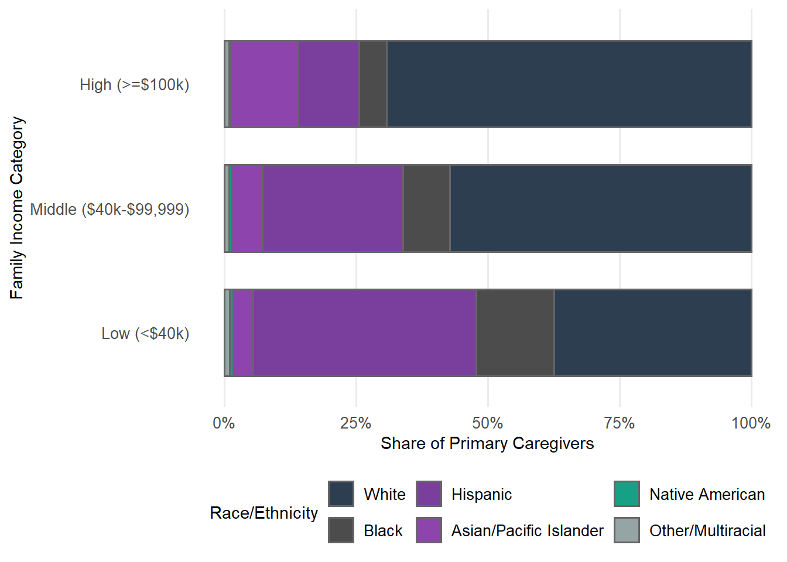